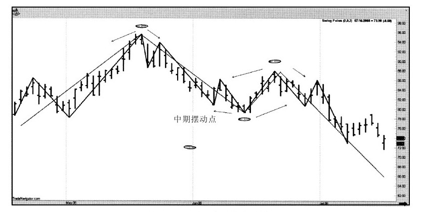
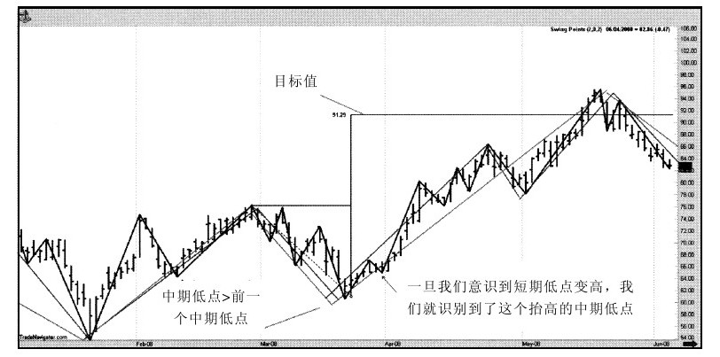

目 录
我最重要的市场信念
我的职业投机生涯的开始
生命之旅
1.1 我是如何了解市场的
1.2 制作图表描绘市场
1.3 非随机的市场
1.4 认识市场结构
1.4.1 确定中期的高点与低点
1.4.2 为什么认识市场结构如此重要
1.5 市场结构永远不会改变
1.6 做空形态
1.7 目标时间与跟踪止损
2.1 你要了解的关于周期的所有知识
2.2 区间变化的自然周期
2.2.1 每日开盘价相对最高价及最低价的重要性
2.2.2 骑虎难下
2.3 顺势而为：价格形态的第二条重要规则
3.1 关键在于时机
3.2 为交易高手提供资金
3.3 证明我的观点
3.4 如何能获得最大利润
4.1 简易的日内区间突破
4.2 标准普尔500指数的价格波幅
4.3 利用价格波动区分买卖双方，发现价格波动率
4.4 结果
4.5 更进一步的思考
5.1 信息时代的谬误
5.2 E.H.Harriman的百万点金术
6.1 市场不是掷硬币游戏
6.2 关于黄金月交易日TDOM的研究
6.3 关于国债月交易日TDOM的研究
6.4 月度路线图
7.1 共同元素
7.2 质疑的问题
7.3 攻击日形态
7.4 如何使用攻击日形态
7.5 做市商陷阱
7.6 一个重要的记录：在更短的时间周期内也行之有效
7.7 哎呀！这不是个错误
7.8 标准普尔的“哎呀”交易
8.1 最大振荡值
8.2 应用最大振荡值进行股票指数交易
8.2.1 比看起来还好
8.2.2 这一概念的更多应用
8.3 一些建议
9.1 盯盘交易者是怎么赚钱的
9.2 用摆动点来辨别趋势变化
9.3 三根线高点或低点系统
9.4 短线交易的一个新指标：威尔差价
9.4.1 一个实例
9.4.2 我的舒适标准
9.4.3 我们还能做得更好些吗
9.5 威尔差价和标准普尔500股票指数
9.5.1 1987年股市崩盘
9.5.2 单独使用也ok，但我们还能做得更好
10.1 月末股票指数交易
10.2 目标交易月份
10.3 更进一步
10.4 债券市场的月末交易
10.5 更明确一些
10.6 越来越好
10.7 卖出的适当时机
12.1 想好退路再进场
12.2 什么是投机
12.3 时机的选择
12.4 投机的几个要点
12.4.1 富人不下大赌注
12.4.2 要赚1 000美元，就得赌1 000美元
12.4.3 投机适合过山车爱好者
12.4.4 如果没有耐心等待，就什么也等不到
12.4.5 如果不能遵照执行，交易系统或策略有什么用
12.4.6 圣诞节不会在12月到来
12.4.7 如果你在游戏中拥有优势，你参与的时间越长，获胜的概率就越高
12.4.8 抓紧盈利而不是亏损
12.4.9 成就会杀人——财富是危险的
12.5.10 恐惧/贪婪困境
12.4.11 进入点、退出点：趋势变化信号
12.4.12 自信、恐惧和积极
13.1 大多数交易者使用误打误撞的方法
13.2 资金管理的方法：总有一种适合你
13.3 资金管理的好的一面、坏的一面和丑陋面
13.3.1 在尽头处壮士断腕
13.3.2 但它会变得更糟……
13.4 展望新方向，把亏损视为资产
13.4.1 瑞恩·琼斯和固定比率交易
13.4.2 现在轮到我来解决问题了
13.5 回到拉尔夫：2011年资金管理的突破
13.6 凯利比率的幻想
14.1 交易与采蜜
14.2 容易实现的目标
14.3 三思而后行
14.4 记住那个叫“挑竹签”的游戏
14.5 事情会变得非常糟糕……
14.6 自我封闭的时候
14.7 贪婪谈得够多了……现在我们来谈谈恐惧
14.8 长跑、交易与亏损
14.9 做错事……这太容易了，不是吗？
14.10 这不是交易，这是战役
14.11 再谈假蝇钓鱼的艺术
14.12 再一次直面恐惧与贪婪
14.12.1 要恐惧的事情比恐惧本身还多
14.12.2 控制贪婪
14.13 为什么大多数交易者会失去大部分的时机
14.14 亏本交易的启示
14.14.1 交易新手们的共同之处
14.14.2 交易中证据的分量并不足以证明什么
14.15 交易赔本的第一大原因
14.16 最重要的交易信念
14.16.1 信念系统
14.16.2 关于恐惧和贪婪的注解
14.17 我养过的最糟糕却又最昂贵的狗
14.18 运动与交易如此相似
14.19 股票与期货市场趋势的起因
14.19.1 货运列车理论
14.19.2 一个重要的类比
14.19.3 从轮船到火车
14.19.4 临界质量
14.20 如何辨别公众交易者与专业交易者
14.20.1 我们开始吧
14.20.2 这一切意味着什么？
14.20.3 关键
14.21 朋友，不能这样做
14.21.1 天哪，好乱的抽屉
14.21.2 政治也难测
14.21.3 让我们总结一下
14.21.4 总结性的话
14.22 交易的狂喜
14.22.1 两难困境
14.22.2 这导致心理呓语
14.22.3 未经掩饰的事实
14.22.4 一套制胜的交易系统和耐心
14.23 打得他们原形毕露
14.23.1 有时候研究过去，可以预测未来
14.23.2 这意味着数百万美元
14.23.3 金玉良言
14.24 对我来说太难了
14.25 我正视恐惧和贪婪
14.26 演出必须继续
14.27 流鼻血、菜花耳与坏交易
14.28 学会如何赔钱
14.29 希拉里、高期望与心痛
14.30 焦虑不安，如坐针毡——通往天堂之路
14.31 系统开发与交易的秘诀
14.32 赢家与输家的区别
14.32.1 他们之间的共通之处
14.32.2 他们的不同之处
14.32.3 现在谈谈赢家的共同点
15.1 逻辑初级
15.2 这些话我可以用名誉担保
15.3 观察数据A和数据B
15.4 让我们戒掉坏习惯
15.5 怎么戒掉坏习惯
15.5.1 真相1
15.5.2 真相2
15.6 设置止损的建议：金钱损失和不可预期
15.6.1 止损的目的是什么
15.6.2 现在回到现实
15.7 概述我是如何进行交易的
15.8 我的交易策略……它是如何起作用的
15.8.1 寻找市场
15.8.2 进入市场
15.8.3 退出市场
16.1 这就像生活一样
16.2 或许你并不适合做这行……
16.3 你正处于困境……
16.4 但是还有一点……
译者序
时隔五年重译这本书的第2版是一种荣幸。
岁月带给我们的不只是沧桑，还有很多惊喜。比对第1版，拉里·威廉斯的文字少了很多张狂，字里行间透出成熟与睿智。这些年我们读了很多关于交易的著作，拉里是对自身理论最勇敢的实践者与捍卫者，看看他注册的域名就明白了——www.IReallyTrade.com，圈子里能像他这样经年不朽的“大师”实属凤毛麟角。他真诚，不回避问题；他善于改变，不断适应新的市场格局；他较真儿，与随机漫步理论的口水战一打就是十几年，至今仍穷追不舍；他不搞玄虚的东西，不写一堆公式来证明简单的道理。再读《短线交易秘诀》，你会发现读到的就是两个字：选择。这与自然法则暗合，懂得在食物上挑选的物种才是进化得最好的物种，交易也如此，拉里·威廉斯在交易选择上的挑剔，让他长久地存活在这个残酷的市场中，成了活的奇迹。书中拉里展示了很多方法，这些方法的神奇之处不是参数，而是它们所体现的观察市场的思路与方法，看拉里的书要参悟方法，不要忙着动手交易；他教大家捕猎的时机与逃生的方法，而不是去当冒进的枪手。
开卷有益，希望大家在《短线交易秘诀》（原书第2版）里找到你正在寻找的宝藏。
高晟财富全体译者
info@gscaifu.com
绪言 你已经是一名商品交易者了
在本书第1版出版后的这些年里，越来越多的人成为股票、商品期货以及外汇的交易者。给我打扫草坪的家伙、我的牙医还有我最喜欢的厨师都开始交易了。这是为什么呢？
我想，除了投机的刺激之外，一定还有些什么原因让大家都开始交易了；现下，越来越多的人都需要一条摆脱窘境的出路。他们不想受雇于人，也不想雇用别人。他们期望独立，而似乎只有作为交易者才有可能。这是个众人追随的梦想，在不计其数的交易者那里也令人叹服地成为现实。这是一条出路……这也是本书要写的：告诉你我这门手艺里的技巧和伎俩。
不管你是否注意到了，你一直都在做商品交易。当然，你可能从来没有交易过一份猪腩的期货合约，但是你肯定为了钱跟别的什么人交易过你所拥有的东西，比如汽车、房子或者古玩。就算你还没交易过那些东西，你肯定也交易过时间。作为一名教师、律师、管道修理工或者建筑工，用你的时间来换取别人的金钱。所以，你在交易的路上已经走了一半，只是你从来没意识到。
当我们交易我们的时间的时候，实际上是在交易我们的时间和技艺。这就是为什么脑外科大夫比膝外科大夫挣钱多的原因，这也是为什么一个很棒的四分位球员挣得比一个外科大夫和一名截球员加起来还多的原因。他有更大的职业风险！并不是说哪种技艺天然地就一定比别的技艺更有价值，而是这种技艺更难得而且难度更高。而这种特性就让那些拥有这种技艺的人，可以靠他们出售这种技艺和时间而赚到更多的钱。
迈克尔·乔丹的运球和扣篮技术本身并没有什么价值，但是芝加哥公牛队的老板看到了从这些看似无用的技术赚大钱的机会，这些技术能让球场爆满，还能让球队赚取电视转播收入。因此，有些“没价值”的东西可能会很值钱。
在一次交易研讨会上，我曾经给大家演示过这种观点：我把一张私人支票放进一个信封里封好，然后把信封放进一个透明的塑料袋里，袋子里还有另外14个一样的信封。每个参加研讨会的人都有机会把手伸进袋子里抽出一个信封。谁能抽到装支票的那个信封，支票上的5 000美元就归他了。
袋子里装着的14个没用的信封，突然都有价值了！尽管除了一个信封不是空的以外，其他的都是空的，但赢得5 000美元的机会是1/15；所以每个信封，或者每个抽取信封的机会都值333.33美元。一旦有人开始从袋子里抽出信封，那些剩下的没有价值的空信封就会升值。一旦5个空信封被抽出来的话，剩下的就有1/10的机会了，价值也就会升到500美元了。当袋子里只剩下两个信封的时候，现场的观众愿意出2 500美元，以便能伸手从袋子里抽出一个信封。突然，不值分文的东西变得如此有价值！
这是你成为一名更优秀的商品交易者的第一课。价值，就像美女一样，正所谓情人眼里出西施。作为一名交易者，永远不要猜测价值到底是多少，价值就是市场愿意支付的价格。它（市场或者其他交易者共同的判断）可能不会一直支付这个价格，但是价格为王，它是多少市场体现的就会是多少。我很早就学会不跟市场争论价格是什么了。
1974年，我做出了一个价值判断：生牛合约的价格会一飞冲天。所以我开始建仓，在每磅43美分的时候，我建立了第一笔头寸。我“知道生牛合约的价值”在哪儿，这个价位远低于牛肉的价值。所以，当价格下跌到40美分的区域时，我买入了更多。毕竟43美分已经很便宜了，40美分的价格当然更好。
当价格接着下跌到38美分的时候，我捡了个大便宜，我可不傻，趁便宜又买了一些。但是却看到价格一路下跌到35美分，然后到30美分，最后跌到了28美分——也就是在这儿，各位，我被敲出局了。我的钱是有限的，这波行情让我在不到30天里付出了300万美元的代价。
就在两个月后，生牛合约的价格飙升到了每磅60美分。但这跟我没什么关系了——一笔十拿九稳的交易让我损失惨重，而且过了1/4个世纪，我被敲出局的消息至今还在圈内广为传播。尽管在这之后我有过许多成功的交易，后面也会提到。
这些年通过对这次事情的反思，我得出了两个重要的结论。第一，价值无常。正因为价值的无常，当你交易期货或者股票的时候，任何事情都有可能发生。
第二条尤为重要。这是因为市场的趋势和方向是你主要关注的，但是懂得如何运用你的资源才是最需要优先考虑的。毕竟，如果我能在生牛交易上保住自己的资本，熬过不好的行情，那我肯定就能抓住那笔让人羡慕的大交易。
你永远也不可能知道市场什么时候会按你认为的方向运行。很多时候，就像上帝一样，市场不会拒绝你，只会推迟应验。严肃的交易者会在他们的交易系统里充分考虑并防范这种推迟。没有比资金管理更有必要学会的规则。你听说过的关于商品交易的一切可怕传闻都是真的。好人因为办错事被市场扫地出门。这里说的错事永远不是市场，也不是交易者的哪笔交易不好。实际上，成功的交易者都有过赔钱的交易，而且数量还不少。
你听说过的、被淘汰出局的人，不是在单笔交易中赌注太大，就是紧攥着亏损头寸太久不放手。你越早地学会处理失败，你就能越早地在这一行里开始积累财富。失败会在这一行里杀死你，成功不会；失败不会成就性格，它只会摧毁你的账户。
前面的段落已经向你描述了成功。老天也许能预测市场，也许不能；价值可能会长久，也可能不会。投机的世界就是要预测未来，这比登天还难。美国军方号称囊括了绝顶聪明的精英，数以万计的情报官员，但还是不能预测柏林墙的倒塌。那你我凭什么还指望能做得更好呢？
权威体育杂志《体育画报》充分证明了我们不能预知未来。1997年，它预言宾夕法尼亚州立大学队将是美式足球比赛的冠军队，密歇根大学队将位列第18名。赛季结束时，密歇根大学队捧走冠军杯，而宾夕法尼亚州立大学队还在苦苦挣扎。预测排名第三的华盛顿大学队反被华盛顿州立大学队击败。华盛顿州立大学本来连前20名都没有进过，是个冷门。随后这支球队赢得了太平洋10强（Pac 10）的冠军，甚至还差点儿在玫瑰碗体育场扳倒密歇根大学队。
历史总是重演；麦克·泰森就是个鲜活的例证。一条有趣的注脚是：几年前，蒙大拿州的年度银行家，这家伙实际上在盗用银行资金。为了填上赃款，抽身出来，他竟然又从银行拿出另外100万美元，押在“钢铁麦克”泰森身上，而后者当然，在与“克星”道格拉斯的比赛中输掉了。所以这位银行克星输了个精光，也就被揪出来扔进了大牢。
谁又能预先料到（互联网夹击下）报业的沦落，或是老虎·伍兹的崛起呢？
靠看水晶球算命为生的人注定要吃一肚子碎玻璃。
但你要牢记：尽管你我都不能洞悉未来，特别是价格运动，但是我们可以学会控制我们的损失。根据数学理论，这是确定的，是奠定成功的基础，每一笔交易都是这样。
我曾经追随一些利润先知者、金融预言家多年，他们都曾声称其指标可以预知未来。最终我明白了：上帝不想要我们看到未来。就这么简单。
假如能看到“未来在哪儿”的话，那我们早就做好几次百万富翁了。我们会去赌马、转轮盘赌和扔骰子。但到时候又有哪个赌场欢迎我们去赌呢？另外，如果今天就知道自己未来的每一天，那生活将是多么无聊啊。谁又想那样活着呢？到哪里去找发现的喜悦、未知的魔力、胜利的狂喜以及克服极限的挑战呢？
如果我们都因为拥有预知未来的能力而成为富翁，那谁又会来为我们工作、种田和养牛呢？那也就没有电话公司，没有电影，没有电视，没人需要工作。更糟的是，谁又会雇我们呢？
就像我说的，拥有无上智慧的上帝不想让我们知道未来，肯定更不愿意我们知道期货市场的未来。那些想投机的人认为这是一个预测未来、了解不可知的游戏。实际上不是这样。这个游戏要你设计出有成功优势的策略，让胜算站在你这边，运用这些胜算；并且随时对游戏里出现的任何潜在变化保持警觉，比如新的参与者、新的想法和概念。
投机和眼镜这两个词一样，都来自拉丁语specular，意思是观察。我们和赌棍不一样，他们参与的是没可能一直赢下去的游戏，他们能做的也只能是希望运气站在他们这边而不是赌场那边。我们这些投机客观察事物在未来会怎么发展，但是因为我们懂得没有谁能保证未来的事情，所以我们会通过适当的技巧来保本，这样我们就能赢得这场游戏了。
投机的艺术不仅要求有观察能力，更主要的是讲究保存实力。
我最重要的市场信念
基于我的研究和经历，我得出一个很有威力也很赚钱的信念体系：
[我认为我现在所做的交易会是一笔亏损的交易……而且亏损会很大。]
对你们这些乐天派来说，这种说法太消极了。但是乐观的想法会让你觉得会赢——这必然导致你买卖太多的合约，并且持有很长时间。毕竟，如果你很乐观地觉得行情会再走俏，那么尽管反弹和回调不出现，你也肯定会守着仓位等待反弹或者回调的机会。
关于这一点我是这么看的，如果你执着地、一厢情愿地相信你能战胜市场，你的这种信念会让你错误地处理交易。这就是为什么对交易者而言信念体系如此重要的原因。如果你的信念体系告诉你这将是一笔成功的交易，而事实上它不是，那么坚持你的信念会直接让你放大亏损，继续持有亏损头寸。这是成功的交易者从来不做的。认为下一两笔交易能让你的账户翻身或者小赚一笔的极端乐观想法是最危险的。
现在，我们来看看，如果我认为我当前的这笔交易一定会亏损，而且上帝和我也没有契约说这笔交易一定会成功。事实上，我从心里不相信市场是绝对完美的。要记住有大量的数据支持这一观点：75%的基金经理业绩表现比道琼斯指数差；80%的短线交易者亏掉了他们的风险资本。从我自己的记录来看，我的好多交易也是不赚钱的，而且我保证你们中间很多人也和我一样。
我所遭受的重大损失，特别是那些超出正常值的亏损都不是市场的“过失”。“这些损失”都不是自己找上门来的，是我自己坚信当前的交易会是一笔成功的交易，从而没有遵守游戏规则。
有人说，你的信念体系有多强大，你就有多强大，我同意这种说法。因为信念给你行动的力量，让你更加果断，减少犹豫。我们依据自己的信念做事，所以那些思想信念是我们人生这出戏的剧本。
如果你接受我的想法，认定现在的交易很可能会赔钱，那你肯定会设置止损保护自己。你会控制灾难，只要有可能就搭上第一艘救生艇，而不是跟着船沉下去。
同样，如果你接受了我的想法，你就不会把所有钱都放在一笔交易上，还指望它来解决你所有的问题。在重仓交易的时候，只要稍许的亏损就足以让你爆仓出局了。
对未来行情乐观的想法会让我们承担不必要的风险。在一个初始就胜算不高的游戏里盲目乐观，我们肯定会自食其果的。
我的职业投机生涯的开始
因为我太懒不愿意去工作，又太老实不愿意去偷，所以我只能参加牛仔竞技。
——弗莱克斯·布朗（Freckles Brown），世界斗牛比赛冠军
我的职业投机生涯是在七年级的时候开始的。当时，有个名叫保罗·海兰德（Paul Highland）的孩子告诉我靠投硬币可以挣好多钱。我们会猜从裤兜里掏出来的硬币是正面还是反面。在蒙大拿比林斯成长的日子是我进入投机行当的绝好引子。猜硬币是我的开始，当然我也输掉了一些钱；但是如果问除了美术和足球以外，我还真正学到了什么的话，那就是我发现赌硬币可以轻松地赚大钱。
到上高中的时候，投机该知道的一切我都学会了。尽管花了些时间，但最终我还是发现了保罗和沃吉·马康的把戏，他们俩结伙骗我的钱。他们控制硬币，一个人让正面朝上，另一个人让背面朝上，我别想赢钱。然后他们俩再去分赃，这是我对操纵市场的最初认识。
我没有报警，也没有向管理机关告发他们。我用自己的方式处理了这件事。直到今天，我还是不相信这些负责纠正错误的官老爷。他们不会，至少是不会及时地出手帮助你和我的。
杰克·麦卡夫迪是小镇上最野的孩子。实际上，在整个蒙大拿州，就是连州里数不清的牛仔、酒鬼和矿工都算上，他也是最厉害的。如果一般的大个头在你的胳膊上打一拳，你会觉得有些疼。杰克个头并不大，但要是被杰克打一拳，你会疼到骨头里。他的力气大得惊人，在我看到的单打独斗中，每一次都是他占上风。没人敢靠近他，打架成了他的看家本领。大概是在高速路上被警察追捕时，杰克被一名洛杉矶警察打死了。然而，真正的原因是杰克很有女人缘，他此前一直在和这个警察的老婆约会。
大多数猜硬币的玩家都不跟杰克赌硬币。通常来讲，他会付账，把输了的硬币交出来，但要是他决定不交出来，你又有什么办法呢？难道要吓唬他，然后被他揍个半死吗？啊，对了，投机的第二课，是要仔细地选择你的搭档和生意伙伴。
几年以后，我们使用理查·乌莫尔（Richard Ulmer）开发的生牛期货交易系统，把一个5 000美元的账户做到了40 000美元以上。这个账户开在乔治·雷恩（George Lane）的经纪公司里。老乔治号称自己是深受吹捧的振荡指标的创始人。当然，他没发明过什么振荡指标，我也没能从这家经纪公司拿到那40 000美元。就在当局关掉老乔治的公司前，我账户里的钱也被耗尽了。
我从杰克那儿学到的第二件事就是，强者是不会看得起弱者的。当我实在受够了杰克猜硬币输了以后就赖账的做法时，当他输了又准备赖账时，我用尽全身力气往他肚子上打了一拳。他吃了一惊，瞪着我问道：“你想干吗？你知道我现在就可以把你全身的零部件都卸下来。”
我能说的也就是：“好啊，来吧，你打吧。你不守规矩，我早受够了。我知道你会打断我每根骨头，你也会觉得这很爽，但这跟我站出来对付你的感觉相比差远了！”
杰克回答道：“我喜欢你这样，你有种。”他把刚刚输给我的硬币交给我，然后走开了。从那以后，我们成了最要好的朋友，但却再也没有一起猜过硬币。
蒙大拿州的所有人工作都很勤奋。当然，我爸爸也和别人一样勤奋地工作。他在一家炼油厂每周工作40个小时以上，然后周末到Doc Zinc的硫磺精炼厂再加几个小时的班；并且好像这还不够，他还要熬夜读书，选修电子学方面的课程，这样，他就能成为雇主科诺克（Conoco）公司里更有价值的员工。爸爸付出的勤奋和忠诚得到了回报，他晋升了。
有个爸爸在炼油厂上班的好处就是他上大学的小孩儿，可以到炼油厂打暑期短工。我也去打过短工，这段经历进一步坚定了我强烈的愿望，不能像他们一样工作。他们做的都是工作时间很长、不停倒班的工作。这周下午3点半去上班，下周变成晚上11点半上班，再接下来一周可能会是下午3点半或者早上7点半开始上班。在我看来，这些工作安排得既没有规律也没有道理。我看到的就是一群人在闷热、恶臭、嘈杂的炼油厂里自愿地做着无休止的工作，这是一个对我来说没有丝毫意义的地方。
一座炼油厂一定会有100万个以上的阀门，而且我确定它们打开和关闭的方法都一样。问题是我从来搞不清楚哪个方向是正确的。这很让人恼火，因为这不只让人觉得我蠢，而且会牵连我的爸爸。我爸爸技术一流，他手底下就没有修不好的机器。如果我需要做个开胸手术，我相信爸爸胜过外科大夫。
爸爸手艺很好（我们家的房子、妈妈漂亮的橱柜都是爸爸做的），部分原因，我确信是我们没钱把东西送出去修。穷人要比富人挖掘出更多的潜能。
别人比较我哥和我的时候，我的愚笨成了大家的笑柄。我哥哥天生就懂得在炼油厂里该做什么，而且哥哥跟长辈们相处得也很好。我懒散，渴望独处，除了画画外一无是处，这些让我觉得自己很无能。我最初找回自尊的体验来自运动，但是比赛一结束，那种认同感也就不在了。我会躺在床上梦想，描绘出迈向更好生活的道路，寻思着那些拥有豪宅的人是怎么取得成功的。我不满足，我要找条出路。
猜硬币看起来就不错；伪造驾照（每张5美元，出生证每份20美元）挣得更多一些。我有限的艺术天赋让我挣到了更多的钱，自立门户。当然，这也伴随着相当程度的风险。做一般人不能做或是做不到的事情，是我喜欢的感觉。从我看到的爸爸那种单调的工作中我是很难找到满足感的。爸爸做每件事都是按照书上说的做，严守规则，只有一件事例外。
当猎鹿时节到来时，爸爸就会把这些条条框框扔到窗外。我们打鹿、羚羊和麋鹿，打到足够让全家人一年够吃够用。我们的那张猎鹿证用了三四次。当生计都是问题的时候，我领会到规矩根本就无所谓。人必须冒险，我爸爸也不例外。狩猎过程中我最喜欢做什么呢？是把猎物装进口袋，还是冒着被抓的风险打更多的鹿、鱼或是从事别的什么活动？我过去常常思考这两个问题，这两样都很刺激。这么想着，我的职业投机也就展开了。
真正优秀的投机者喜欢刺激，实际上，他们寻找刺激，并把这当做某种智慧的喷涌。
也许这就是为什么放学以后我喜欢在街角卖报纸或是圣诞卡，挨家挨户地兜售花园草籽来挣零花钱。我是在冒险，不知道我到底能不能把东西卖出去，但也可能只要我去了，说说话，展示一些东西就能挣到好多钱。
我看够了辛劳的工作，懂得那不是我想要的生活。就像斗牛士所说的，我“太懒了，不想上班”，而且又被教养得“太老实了而不愿意偷窃”。所以上完高中后，读大学或是参加海军成了正确的方向，父母也鼓励我这么选择。他们总是教导我，上进才能过上更优越的生活，上大学就是通向优越生活的大门。
1962年，我问别人报纸上的“最活跃”股票列表是什么意思，那个人的答复一下子吸引了我。“看见通用汽车的股票了吗？每股上涨了1.5美元。要是你昨天买了这只股票，你就赚到150美元了。”
一天就赚到150美元！
哇，这比赌硬币来钱还快！当年，150美元比一个伙计在炼油厂上班一个礼拜挣的钱还多。这看上去简单，而且赚头大得惊人。我只有两个问题：怎么开始交易？我怎么早没发现这个买卖呢？我和这种看上去容易赚钱的方法简直是相见恨晚。
这种吸引力给我带来了一生最大的挑战，它让我从1962年以来差不多每天都在努力地研究它。真的是这样，我仅有的“休息时间”是我在1978年和1982年竞选参议员期间。除了那两次间隔以外，我这辈子每天都在“工作”，这让我父亲感到非常欣慰；但我肯定，这从来不是炼油厂里的装配工，也不是在大学前后会做的事。
从这段经历中，我相信成功的投机者心中都有三个动机：强烈的挣大钱的愿望；渴望或是向往在别人面前展示自己；内心对境遇的不满。这股强烈的不安分可能是投机者的一项重要资产。尽管很多人在生活中寻找平衡，但我从来不觉得那是健康的；太普通的人是成不了大事的。有时，我会想过一种更平静的生活，但那种想法不会在我脑中停留太久，我猜我的不安分是永远不会消失的。如果我的生活方式说明了什么的话，那一定是那股不安分煽起了一个投机客内心的那团火焰。
生命之旅
如果能够通过交易的成功向世界、向过去的女友、向父母亲以及哥哥，甚至向一些我不认识的也记不起来的人“证明”我的价值，那么，即使不赚钱我也会去交易。如果说我野心勃勃，也许是对的，我不是在炫耀，而是要他们见识我克服困难的本事。
我就是要让全世界都知道：我找到了一条出路。本书向你展示了同一座大门，展示了过去这些年里我学到的东西，市场是如何变化的，以及我们还可以做些什么以便继续成为成功的交易者。
过去数年间，我学到了太多东西，尤其是学会了如何适应市场的改变，因而，你从这本书里学到的绝不仅是多几条短线交易的秘诀，更多的还是适应的艺术。
如果这番话激起了你的共鸣，那就系好你的安全带，你就要上路了。
当大多数像我这样70岁出头的人在享受退休时光，在网上冲冲浪或者看着美国偶像打瞌睡时，我的生命旅程仍在继续。我仍然对这些变化莫测的市场着迷。因为我还在交易，经常每月交易超过1000笔，它们使我充满活力、思维活跃。你可以在我的网站www.ireallytrade.com搜到更多详细信息。
市场令你活力充沛，我想象不出还有什么活法或日子能比现在的更幸运了。
我的父亲一生辉煌，身教于我的就是：“儿子，生活给你的都是你投入生活中去的东西。”如果你想在投机中获胜，那就请全身心投入，报酬必将非常丰厚。
第1章 从短期混沌中理出头绪
交易获利基本上有两种方法：用小的头寸捕捉到一次大的价格波动；或者用大的头寸捕捉一次小的价格波动。
——比尔·米汉（Bill Meehan）
到目前为止，如果我所说的与你的投机目标正好契合的话，那么你就该学习一下市场如何运作了。投机股票和商品期货交易并非适合所有人，也许对你就不适合，我也曾疑惑这是否适合我！
令人震惊的是，这一章节变化如此之少。这里所呈现的概念与10年前、20年前甚至100年前完全一样。这是我交易的基础。我认为市场存在一种确定的结构以及路径或形式，价格从一点运动到另一点会遵循这些。一旦你识别到这种结构，那么无论是在人工喊单交易的时代还是电子交易市场，它都同样真实。价格如何根据每日开高低收的组合波动，这也是一种语言。我一直以来将解密这些象形文字视为己任，以便更精准的“解读”市场。我还在着手这件工作，就像考古学家趴在“苏美尔大事记”上那样找寻真理。
1.1 我是如何了解市场的
我的交易生涯是从俄勒冈的波特兰（Portland）开始的，在那里我遇到了一位美林证券的经纪人，他认为我们可以一起挣钱。但是他只对了一半，非常幸运，他很快挣到了大笔佣金，而我遭受了损失。还有比这更糟的是，钱不是我的；这是一位与我素未谋面的人交给我的投资资金。事后我才明白，这次打击对我来说比财富还宝贵，它改变了我的人生。
那次事件坚定了我学习商务的愿望；毕竟，如果这个市场这么容易就亏损，那它也一定非常容易赢利，不是吗？我的经纪人和我一样对这场游戏陌生，实在没有什么意见或建议给我。他的市场观点是买入好的股票并且持有（一个相当不错的想法），可我的才能或者说是意愿是抓住市场波动来挣钱。于是我开始学习如何做短线交易者。
我没有老师，也不认识其他的交易者，所以很自然地，我寻找书籍来帮助自己解决问题，跟你现在买这本书是一样的。作者们把交易都说得很简单。我读过乔·葛兰威尔（Joe Granville）关于技术分析的一些经典著作，并且开始保存股票的每日开盘价、最高价、最低价和收盘价的数据，以及乔提到的要关注的技术指标。我还没掌握技术分析，研究市场已经占去了我全部的时间，每天晚上花费五六个小时，甚至整个周末都在企图战胜华尔街，获取财富。这让我险些失去一次婚姻。
我的第一任妻子爱丽丝·菲特里奇（Alice Fetridge）尽管成了“图表专家的寡妇”（chartist's widow），但还是支持着我的嗜好。最终我们离开波特兰去了加州的蒙特雷（Monterey）。我们都找到了工作，同时我还在攻读法律学位。我甚至参加并通过了“小型律师特考”（Baby Bar Exam，一种专门为夜校学生和函授学生准备的考试）。然而当时，我差不多已经放弃成为律师的想法了，特别是在一家律师事务所工作了之后更是如此。我认为的做律师就是站在法庭上，拯救人们的生命；然而现实却是要靠打官司收钱，找那些倒霉的人，为流浪汉和罪犯代言。这跟交易不一样。
很幸运，在蒙特雷我遇到了两位和我一样绘制交易图表的经纪人，乔·米勒（Joe Miller）和唐·索瑟德（Don Southard）。很快，他们开始跟我交流实战的故事，教我他们所了解的关于市场的一切。我们都是葛兰威尔能量潮（OBV）指标的忠实追随者，并且保存了30～50只股票的能量潮图表。同时我开始保存移动均线，这是从当时到现在，所有书籍都大加赞赏的技术工具。
我的股票交易有了一些成功的经历，但是真正促成我的交易生涯的是一本吉尔·哈勒（Gil Haller）所写的书，书名毫不谦逊地叫《哈勒理论》（Haller Theory）。我从这本书里学到了不少关于股票和投机的知识，后来，我结识了吉尔，并且时至今日，我都感激他给予我的支持和鼓励。吉尔的理念是要去买那些已经涨了很多的股票。这是今天基金买入股票时使用的一种方法，他们叫做“动量股票”（momentum stocks）。吉尔早在1964年就开始这么做了，并且以此为生。但是他并非按照我想象的方式生活！他的桌子很旧，上面满是煤灰，他用别人给他的信件背面写字。吉尔不是吝啬，而是节俭，他精打细算，不该花的钱一分都不花。
后来，我看出了一套市场运作的理论：从短期看，市场会上下剧烈波动，在我叫做“平均”价格的平衡点上下移动。我的目标就是判断何时价格低了，会折回到平均水平上。也就是说，我必须判断价格的过度延伸，然后找到可以告诉我这种波动过度了，已经开始反弹了的依据。因为这看起来太容易了，我当时确信这一切一定会有某种基本原理或者规则。我的理由是，市场，所有的市场，从A点运动到B点一定存在着一些基本的不可拒绝的规律。
后来我发现这种假设是正确的：市场运动的规律是存在的。好消息是，市场如何从A点运动到B点的方式是有一定结构的；坏消息是，这种结构并不清晰。尽管如此，价格运动很像外语，表面上还是有序的，而且可以学会。我一生都在致力于寻找这种市场语言的机理，我也非常愿意帮助你们学会使用我的神奇解码指环。
1.2 制作图表描绘市场
一旦你开始对市场进行研究，你就会发现，这是一个以图表为王的视觉王国。正如图1-1所示，常见的图表中，每日的开盘价用每条棒线左侧的水平短线表示，而棒线右侧的短线表示收盘价。棒线的最顶端代表股票或商品期货在日内达到的最高价，而棒线底部刚好相反，代表日内商品交易的最低价。
随后你会看到，开盘价是一天内最重要的价格。我与乔·米勒、唐·索瑟德和科特·胡伯（Curt Hooper）共同发展了这种观点。胡伯是一名海军学院的研究生，在1966年与我共事的人中，他是第一个使用计算机寻找答案的人。尽管被OBV方法深深打动，但我们还想找到更可靠的公式。当我们得知OBV的公式是出自两个旧金山的伙计：伍兹（Woods）和委诺里亚（Vignolia）时，我们认为自己也可以开发出更好的方法。
图 1-1 显示开盘价、收盘价、最高价和最低价的典型图表
当我们开始把图表中这些价格运动日线合并起来时，出现了图表读取的问题，并且产生了混沌。这些代表价格运动的图像被那些称做“图表专家”的人积年累月地“分析”着。总的来说，图表分析专家们以前受到的待遇，和你失业的小舅子没有太大分别，直到20世纪80年代早期这种状况才有所改善。
这群人收集作图方法，找出图表形态并给形态命名，比如：楔形、头肩顶、三角旗形、旗形、三角形、W形底、M形顶和1-2-3形。这些形态被假定代表了需求和供给之间的争斗。有些形态提示卖出，另外的则可能提示专业性的建仓。这些图很有意思，但是有可能给人误导。这些同样的形态也可以出现在一些与供给/需求因素无关的图表里。
图1-2描绘的是用一枚旧银币掷150次的结果，画出来很像是冻猪腩的图表。下一幅，图1-3是气温极值的图表，还是大豆的图表呢？谁知道？我们都知道，把非市场的或者经济驱动的信息进行描绘所得到的图表与股票和商品期货交易数据描绘的图表很像，也可以产生同样的反映买卖双方对抗的形态。这里，我必须告诫你要运用智慧，别被这些图表形态干扰。
图 1-2 掷硬币正反面次数累计基础图
图表分析专家们变成了“技术分析师”后，扔掉了占星板，换成了计算机。计算机让图表分析专家们看起来、听起来更让人钦佩，就像是科学家一样。实际上，很多书打着“……的新科技”或“……的科技手段”的旗号，真的会科学到这么疯狂的地步吗？
总体来讲，我想不会。
图 1-3 一只股票吗？不是，这是每天的气温记录；当天最高气温、当天最低气温和最新的气温
价格不会跟随那些深藏在纽约豪宅休息室里神秘的、魔幻的鼓点跳动，它的韵律只有极少的行家才能认出来。价格跳动无处不在，而人的情感受新闻和经纪人的忽晴忽雨的内幕消息所左右，因而我们的图表也变得飘忽不定。
1.3 非随机的市场
大部分时间，商品价格像是个喝醉了的水手，徘徊在街头，既不知道要去哪儿，也不知道去过哪儿。数学家会说过去的价格运动与未来的趋势没有关联。
我的交易伙伴维克·涅德霍夫在给他的“投机名单”写过那些可爱的订阅者的文章以及在他的代表作《投机者的教育》（1997），就此著述甚丰。我怀疑我们会就价格在图表中如何漫步意见相左，但我还是认为存在某种关联。为什么呢？因为尽管喝醉的水手摇摇摆摆、跌跌撞撞，好像走得并非随机的路线，但他的醉态有迹可循。他总是想去一些地方，而我们也总能找到这些地方。我们必须了解他的醉态，才能知道他要去的地方。
尽管价格运动有高度的随机性，但是它与完全的随机游戏还是相去甚远。如果此刻，我不能在书的开始部分证明这一点，那么剩下的章节就该教你如何扔飞镖才对。在价格随机游走的游戏里，飞镖手肯定比专家玩儿得好。
假设从掷硬币开始，如果我们掷100次，正面和反面的次数应该各为50次。每次出现正面的时候，下一次掷硬币出现正面和背面的概率应该各为50%；如果已经连续出现了两次正面，我们再掷一次的话，下一次正反面出现的概率还是50%。也许你听说过，硬币、骰子和轮盘是没有记忆的。因为这是随机游戏，概率是固定的。
如果在市场中也是这样的话，价格上涨有50%的可能，每次上涨之后我们都预期另一次50%的上涨机会，之后再次预期50%的上涨概率。价格下跌也是同理，价格下跌后有50%的机会出现下跌，我们能看到一再重复，继两次连续下跌后出现第三次收盘价下跌，概率为50%。在现实的交易世界里不是这样的，这说明价格运动不是完全随机的。
表1-1显示，在众多市场中，收盘价高于开盘价的次数。没有给定标准，电脑每天开盘就买入，收盘就平仓。我们得到了一个不同于50/50的结果，略微高出一些，收盘价高于开盘价的概率达到53.2%，这是本不该发生的。
如果这是“不该发生”的，那么在下跌次日开盘买入会怎么样呢？理论上，我们应该看到与表1-1同样的百分比结果。问题是（对那些擅长于理论研究，缺少市场体验的大学教授和学究们来说）市场并非如此运行。表1-2中给出了连续下跌后收盘价上升的百分比。
对交易者而言这不是什么惊天动地的新闻，我们知道市场下跌是为上涨做准备。过去没有人知道精确的百分比，而且我也不会参考这些列表决定在市场中是否买入或持有。这不是要点，要点在于：在单次下跌后和连续下跌之后，我们应该看到收盘上涨概率平均为55.2%。我们提出市场并非随机的，形态确实可以“预测”。接下来我们继续无靶的射击。
这里还有一个关于德国证券报指数DAX自1998～2011年的数据更新：如果每个下跌交易日后买入，并在买入当日以收盘价离场，那么在总共1 591次交易中52%会获利，但总体亏损将达到令人心痛的60 588美元。如果于连续两个下跌日后买入，我们可以交易724笔，其中52.2%的交易会获利，同时我们也会看到亏损，但亏损大幅减少，仅为1 568美元。
如果你有耐心等到三个连续下跌日后再买入，那么市场会回报给你334次交易机会，55%的交易获利，获利高达25 295美元。还想做得更好吗？每周中有些日子DAX的上涨机会比其他时间更高，所以如果前面已经连续三个交易日下跌的话，让我们只在周二、周四和周五买入。结果远远胜出前面的实验：204笔交易，准确率58%，交易净利润达到44 795美元。
你所见到的是这本书首次出版多年以后，出现于不同的市场中。尽管不常见，但同样的原理在价格运动中依然有效。
1.4 认识市场结构
图表分析专家们对几乎所有市场的跌宕起伏都命有奇怪的名字，但他们好像错过了市场中的要点，那就是价格（以日线为例，棒线顶部代表日内最高价，底部代表日内最低价）以一种非常明确的、惊人的机械方式运行。这很像学习生字，一旦你学会了字就可以认词，学会认词就可以读故事了。
要掌握的第一个字告诉你什么样的市场行为会造成短期的最高价和最低价，学会了这个基本点，所有市场结构的意义就一目了然了。
我可以用这种简单的公式来定义市场短期的低点：如果任何一个交易日的最低价，前后交易日的低点都比它高，那么这就是短期的低点。我们这么判断是因为对市场行为的研究会告诉我们，价格在低点日下跌，之后未能创出新低，因而转向上升，最终使该低点成为短期低点。
市场短期高点刚好相反。这里我们看到的是交易日两侧都有较低的最高价出现。这说明价格上升到中间交易日的顶点，然后回落，从而形成了短期高点。
最初，为了和20世纪30年代亨利·怀勒（Henry Wheeler）的著作保持一致，我把这些短线变化叫做“圈出的”高点和低点。在计算机出现之前的年代，我们保存价格笔记，为了辨别出这些价格波动中止，我们会在笔记本上简单地用圆圈标出这些点，或者“圈上”这些点，这样我们就很容易看到它们。
图1-4中展示了几个短期高点和低点，现在花几分钟看看这种形态到底代表了什么。
图 1-4 英镑（日线图）
资料来源：Graphed by the“Navigator”，Genesis Financial Data Services：800-808-3282.
如果你理解了这个概念，我们就可以逐步将这些要素进行组合了。你可能已经找到了答案；市场从短期高点摆动到短期低点；这实在令人兴奋，实际上，我们可以用机械且自动的方式度量市场波动。没必要听取复杂的图表分析专家的谈话，也同样不必迷恋图表分析专家或技术分析师的虚幻世界。
两种特定类型的交易日会给我们的基本定义带来混淆。第一种，我们叫做内移交易日（孕线）。之所以这么叫是因为当日的交易价格发生在前一日的价格区间内。这种交易日的特点是：比前一日的日最高价低，以及比前一日的日最低价高。在对9种主要商品50 692个交易时段的研究中，我发现了3 892个内移交易日，它提示我们有7.6%的概率出现这类交易日。
为了要辨别出短期摆动点，我们只能忽略这些内移交易日以及它们可能构成的短期关键点。内移交易日意味着市场进入了密集交易区，当前的摆动不能继续前进了，但是也不能折回，因此直到这种状态消失前，我们必须等待并且不要在趋势分辨过程中使用内移日。
第二种称做外移交易日（抱线/吞没形态）。这种交易日很容易看到，它有高于前日的最高价，也有低于前日的最低价！这种交易日出现时（它出现的概率大概是3%），我们必须研究当日价格从开盘到收盘的价格运动过程。在前述对50 692个交易时段的研究中，出现了3 487个外移交易日，占到了几乎全部交易日的7%，但出现的频率还是不如内移交易日高。
牢记了前面的信息，再把你的注意力集中到图1-5上，图中对内移日和外移日进行了讲解。请记住，当价格从一个端点移向另一个端点时，我们要做的是判断短期价格摆动。
图 1-5 猪腩（日线图）
资料来源：Graphed by the“Navigator”，Genesis Financial Data Services：800-808-3282.
到现在为止，你应该理解了基本的概念，也能明白价格如何摆动。在图1-6中，我标出了这些端点并用一条直线把它们逐点连接起来，以显示出摆动形态。
图 1-6 猪腩（日线图）
资料来源：Graphed by the“Navigator”，Genesis Financial Data Services：800-808-3282.
1.4.1 确定中期的高点与低点
演出开始了！想想看，如果任何一天的前后都有较低的高点，我们能把它定义为短期高点的话（价格内移日不算），那么我们可以再向前迈一大步，把前后都出现较低短期高点的短期高点定义成中期高点。现在系好安全带，因为我们还要再进一步：任何中期高点，只要前后两侧的中期高点都较低的话，我们就说它是个长期的高点。
只用了一段话，我们就能确定市场短期、中期、长期三个重要的摆动。市场低点也是用同样的方式确认：首先找到一个低点，如果两侧的低点都更高，就是短期低点。然后找到一个前后两侧的低点都更高的短期低点，这就是中期低点。确定长期低点一样简单：只要中期低点前后的中期低点都比较低，那么这就是一个长期低点。
现在该来看看这是怎么一回事了。我在图1-7中先标记出了所有的短期转折点，然后找出了中期转折点，最后在另外一个层次找出了更长周期的转折点。这幅图说明了一切；真的只是简单的形式就包含了一切。现在如果你看这幅图，就会明白市场的结构，就能理解我们能从市场的混乱中创造秩序。
图 1-7 用图表分析从短线混乱中找出条理
有了前面这些认识，我把示意的样图换成真实的市场价格图表：瑞士法郎（见图1-8）和咖啡（见图1-9）。首先我要圈出短期的转折点，然后通过比较更高或更低的方式找出短期转折点。之后从另一个层面上找出中期转折，最后到长期转折点。说起来简单，但你仔细研究图表以后就会发现，把这样的关系绘制出来可不容易。让我们来看看吧。
图 1-8 瑞士法郎（日线图）
资料来源：Graphed by the“Navigator”，Genesis Financial Data Services：800-808-3282.
图 1-9 咖啡（日线图）
资料来源：Graphed by the“Navigator”，Genesis Financial Data Services：800-808-3282.
1.4.2 为什么认识市场结构如此重要
一旦你对这些市场的基础结构有所了解之后，你就可以在这些转折发生伊始就辨别出它们来。当价格上涨超过前一天的高点，而前一天的最低价又比更前一天最低价还低的时候，那么这就是个短期低点所在的位置。仅靠这次价格穿越的特性，我们就知道短期下降的摆动结束了。同样的道理，如果价格下跌低过前一日的最低点，而且前一日的最高价又比更前一日的最高价还要高，短期的最高点就形成了。这就意味着，在交易时段内我们就能把握这些转折点是什么时候形成的。
作为短线交易者，我们也能说出中期的高点和低点形成的时间。怎么知道的呢？很简单，如果短期高点的形成有助于我们确认中期的高点，进而确认长期的高点的话，我们就能在一些理想的转折点入场。
图1-10显示了这些是怎么组合在一起的。当价位上涨超过A日最高价，就形成了一个短期低点。这个短期低点比前一个短期低点更高。这就是说，低点B是个长期低点，我们可以从这个可能的长期趋势的上涨初期就开始买入。
图 1-10 猪腩（日线图）
资料来源：Graphed by the“Navigator”，Genesis Financial Data Services：800-808-3282.
这其实就是怎么把转折点编织起来，给每个部分找到正确的位置，好让我们能够了解市场活动的结构。它的妙处就在于，不管什么时候、什么市场，你都能从中判断出趋势到底向上还是向下，并且从中选择入场离场的时机点位。
多年以来，我就是靠这些作为买卖的入场依据，过上了相当不错的日子。这些点也是我知道的唯一有效的支撑与阻力位置。它们太重要了，对这些价格点的突破能提供关于趋势和趋势改变的重要信息。因此我才把它们当做止损和入场的手段。
1.5 市场结构永远不会改变
市场价格在高点低点间振荡，因而我们得以辨别这些摆动。这一点非常重要，因为辨别可以使我们在机械的基础上量化和定义所有价格运动。这些摆动能够使我们确定：（1）市场的走势；（2）市场走势何时改变。市场结构的妙处在于它能清晰地为我们勾勒出价格的运动。
它是这样的：市场从一个点到另一个点以循环、摆动和急涨急跌的形式运行。我可以教给你我们是如何识别所有的摆动点的，然后再教你何时利用这些摆动点建立买卖信号。记住这点，让我们从头开始，先来讲一些对市场摆动的基本理解。
实际上我们通过一个非常简单的规则就可以识别出市场中所有短期的最高点和最低点：如果某日（或某根价格线，如果你使用不同时间周期的话）的前后两个最低价都比它高的话，则市场出现了一个短期低点。同理，短期高点指的是某日（或某跟价格线）的前后两根线都更低。
听起来很简单吧？这些摆动点中蕴含着大量的信息与对市场的解读。在讲解其他内容前，我希望确定你们理解了这个概念。图1-11给出一个标记了摆动点的例子，这样你们就能看图中这些点是如何被识别的了。（这里我用的是澳大利亚市场的图表，其实任何国家或任何时间周期都一样，市场结构都在发挥作用。）
理解价格以摆动或摆动序列的方式运动对你们而言至关重要，这是一切的开始。当后一日的价格不能创出新高并且跌落到较前一日的最低点以下时，我们可以说“一轮”价格的上行运动结束了。价格运动本身展开看即是价格的各次摆动。
图 1-11 力拓：短期摆动点
我们一旦理解了这一点，即可如图1-12所示，把各摆动点简单连接起来堆砌出市场结构。
理解这些短期高点低点的构成非常关键，凭借这些，我们可以精确判断短期高点和低点何时充分到位。
图 1-12 必和必拓：短期摆动点
以短期高点为例，一旦某日的低点次日被跌破，我们就把这一天视为一个短期高点。仅仅最高价变低还不够，高收日的低点也得被跌破。图1-13图解了这些，正如常说的，一图抵万言。
图 1-13 必和必拓：短期高点和低点是如何形成的
至于短期低点（见图1-14），我们知道，如果某日的价格高点次日被突破，则该日即被视为一个短期低点。仅仅低点变高不够，低收日的高点也得被突破。
我们可以把上述汇总如下：当市场处于下行趋势，且某日的价格超过了最低日的高点，则视为短期下行趋势结束。
图 1-14 必和必拓：请注意，价格棒的高点未被突破——不是短期低点
在价格上升中，当最高日的低点向下被突破时，则意味着短期上升趋势的结束。
这里的图1-15重申了上述信息。你们已经学会了如何正确发现市场中所有短期摆动，但是这里还有没有你没看到的呢？是的，真的有。因为如果我们把前后两日有较低高点的某日定义为短期高点的话，则我们也可以这样说：
·一个短期高点，前后的短期高点较低，可视为中期高点。
·同理，一个短期低点，前后的短期低点较高，可视为中期低点。
图 1-15 连接短期高点和低点
现在记住这个简单的定义，让我们把同一张图表再看一遍，这次我在上面标出了中期摆动点。如图1-16所示，现在我们能做到的事情简直不可思议。不用任何计算器、电脑或数学公式，我们就能说出市场的短期和中期趋势。以我的理解，市场结构可以使我们判定出任何市场的真正趋势。2008年7月以前，交易者会认为市场在进行横向整理或者无趋势可言。然而市场结构已清楚显示市场在6月中旬形成了一个中期高点，而且较此前的中期高点低一些！当时这就是告诉我们股市已进入下跌趋势，可以做空了。

图 1-16 必和必拓中期摆动点
在讨论精确入市时点前，我想把这部分内容进行得更深入些。如果一个短期高点可以用来识别中期高点的话，那么再进一步，中期高点和低点是不是也可以用来寻找长期高点和低点呢？
·得感谢市场结构的概念，一个中期高点，如果它前后两个中期高点都比它低的话，那么按我们的定义，这就是一个长期高点。
·同样得感谢市场结构的概念，一个中期低点，如果它前后两个中期低点都比它高的话，那么按我们的定义，这就是一个长期低点。
来看一下我们在图1-17中做了什么。我们可以找出所有市场的短期摆动，这些摆动点帮助我们确定了中期摆动点，然后中期摆动点又进一步帮助我们成功地找出了长期摆动点。
图 1-17 必和必拓：短、中、长期摆动
你可以用这些独立的点来解决很多问题，但我希望尽量把事情简化，只去理会最基本的概念。最赚钱的交易，当然是最易找到的那种，都是基于市场的中期趋势实现的。中期趋势提供了比较多的获利机会。不过，中期趋势并非每天都会出现，这会让那些试图每天交易10笔或每周交易10笔的人有些沮丧。根据我的经验，如果进行这么频繁的交易，你不可能从这门生意里赚到大钱。唯有在概率有利于你的时候下重注，而不轻易掷色子，钱才会找上门来。你交易的次数越多，就越有可能把你的投机活动搞砸。换句话说，你要做的决定越多，可能犯错误的机会也越多。
1.6 做空形态
现在，让我们从讨论理想的做空形态是什么样开始。你需要寻找的是一个中期高点，比上一个中期高点低。这种形态清楚地告诉我们市场的趋势为下行趋势。按照市场结构的定义，这个较低中期高点的构成所展现出来的是更长时间周期上的价格波动性。
当一个中期低点高于前一个中期低点时，这就意味着中期趋势为上升走势，这时在概念上，这个形态最好的购买机会就出现了。这里有一个关于摆动的问题：哪个是目前市场中的最大摆动？找到答案，你就会知道当前时间周期目前的趋势了。只用这两种形态，你就有了优化的交易方法，因为你实际上在利用中期趋势这个强有力的武器在交易。
现在，让我们来看下买入信号是什么样子的，这样你就能够明白我的意思了。在图1-18中，价格柱状图显示了每日的开盘价、日内到达的最高价、最低价以及最终结算价，即收盘价。（记住这些可以是五分钟、每天、每月或每周的价格走势图，所有这些适用相同的规则。）
图 1-18 必和必拓：市场结构显示上扬趋势
明白了市场结构，你就能看到必和必拓公司股价变为上升趋势的动态过程。这是有目共睹的。我们可以看到一个比前面低点更高的短期低点，确认了中期低点。这也就告诉了我们市场的趋势是上升的，这时可以买入。而很清晰的买入点出现在前一个短期高点之上，这一点随后就被突破了，准确地说，在这幅图中就是4月1日、66.80元的位置。
请注意，这些信号并不是每天都会出现的。交易者需要极大的耐心等待这种特定的价格形态。但是你们也能看到，等待是值得的。同时，这种价格形态让交易者可以跟踪几只股票和商品品种，利用中期高点和低点形态筛选最好的交易机会。
好吧，我们现在有了多头的交易。下一个问题是：我们怎样离场？我们能为这个交易制定一个目标吗？跟踪止损又应该设在哪里呢？
1.7 目标时间与跟踪止损
市场并不总能运行到你设定的目标，这就是为什么你还要学会使用跟踪止损，它太重要了。
我们可以通过多种方式确定目标价格。很多人认为斐波纳契比例或类似比例对确定价格目标有价值，有帮助。我不这么认为。我曾经就此做过几次彻底的研究，没有任何研究结果显示那些比例是有用的。而且，我也没见过任何其他研究可以证明斐波纳契比例的有效性。不过就这些比例本身而言，他们的说法都只是一家之言。
我所发现的规律是，当价格超越前一个中期高点时，其上涨幅度确实有很大机会就是上涨前从中期高点回落到最低点之间的距离。
换句话说，你可以把前一个中期高点与目前中期低点之间的价格距离加到前一个中期高点上，算出我们的价格目标或者说价格的潜在涨幅。
使用我的“目标射手”指标（来自Genesis software），在我们刚才看的同一幅图（见图1-19）中打开这个指标，就能看到价格目标在哪儿了。

图 1-19 必和必拓中期目标值图
我们剩下的工作就是设置些保护性止损点，以备出现前面的中期高点没有被突破、交易不成功的情形。交易如同打拳击，“出击的同时得时刻保护自己”。止损和跟踪止损就是我们在这场没有裁判的比赛中的防护措施。
我们也可以把市场结构用于设定跟踪止损，如图1-20和图1-21所示。“画圆圈的”，更高的短期低点就是这笔交易的止损点。
根据市场结构概念，我们在建仓后，价格到达目标价格前，如果遇到了新的中期高点构造，可以把其作为离场价位，这就是所谓的跟踪止损。
图 1-20 必和必拓：低点成为跟踪止损
图 1-21 力拓：中期高卖形态
交易并不是一个完美的世界，这里科学与艺术同在——对哪种分析方式更好以及对市场牛熊判断的信心将决定你持仓时间的长短。这里存在四种可能性：
（1）市场在最近的短期价格低点以下运行。
（2）市场在最近的短期价格次低点以下运行（如果你确实看涨，就去掉在当前的短期低点下方设置的止损）。
（3）市场形成一个新的中期高点。
（4）价格到达预期目标。
在交易结果逐步明朗的过程中，你会看到其他较高的短期低点不断形成，制造新的入场机会。这些在更高价位上依次出现的形态也都有短期价格目标，只要这些目标价位没有超过中长期目标值的话，你都可以加以利用。就像我之前说过的，市场结构的意义远远比你能想到的深得多。
那就是你的股票或期货交易模板中最基本的买入模式，不管日间或日内交易都没有任何区别，这就是价格的运行方式。下面让我们把注意力转到卖出机会上。
图1-21显示的是力拓形态，不过用哪只股票来分析并无关紧要，我们也可以用大豆、银、铜或可可的价格放在这儿。所有市场的结构是一样的，问题在于必须确定你找到的短期高点和低点是否与中期值一致。有时候，由于内部交易日和外部交易日价格变化的作用，结构会变得不太清晰。不过，市场上没有什么是一贯清晰的。
尽管如此，这一形态如此常见，找到它对你绝不会是什么问题，而且还可以一而再再而三地找到。如果这个形态不清晰，又为什么要用它交易呢？
在图1-21中，我用折线在图上标出了基于短期价格摆动确定的中期摆动。你会看到，2004年3月形成了一个较低的中期高点，这个高点比前一个高点低，因而我们确定市场正处于下跌状态，希望抓住机会卖空。
当然，问题是我们找到一个中期高点后，该从哪里进场交易。3月9日，价格跌破了前一日的低点，这就使得当天的高点成为一个短期高点，该高点比之前的3月3日形成的短期高点略低，因而我们知道3月3日的高点为当时的中期高点，同时我们也清楚，该高点比这前的中期高点略低。这样我们就可以很容易在该点，即我标出的124.55点进场做空。到这一点，这个形态走完整了。
一旦开仓，首个止损点应该放在中期高点以上，这是个要割肉离场的点位。换句话说，3月3日的高点不能被突破。如果事实确实如此，那么价格就回到上涨趋势中了。到时候，我们就要反手做多，因为中期趋势变为上涨了。为什么？因为到时候价格就会形成一个略高于前面低点的中期低点。
因而这个价位就是你的首个止损点。为了把交易亏损限定在更小的范围内，你可以把止损点设置在高于3月8日的高点上，因为价格突破了该日高点将意味着一个较高的短期低点即将出现，并且还可能形成一个中期低点。
简单的价格摆动带来的所有信息是如何诠释结构的，结构又是如何显示市场趋势的，这些不都很妙吗？
接下来，让我们把注意力转移到这笔交易的价格目标和跟踪止损的设置上来（见图1-22）。
图 1-22 力拓：跟踪止损点及目标价
用2月份的低点减去其与3月3日的高点间的差额，我们就得出了目标价85.42。事实上，价格也确实运行到了这个位置，但我确定在价格目标实现前我们就已经退出交易了。除非有什么强烈的理由，否则没人会留在空头头寸里的。
为什么这样说？因为我认为很大机会上，你会被你设置的跟踪止损逼出局了，这个止损点就在下一个中期低点形态中的一个短期摆动高点上（这同时创造了另一个进场卖空的机会）；为更好地解释这一点，我们来看一下图1-23，这幅图记录了整个交易的连续状态。
直到3月下旬，我们的交易一直进行得很顺利，这时价格开始回升，警告我们一个中期低点已经形成。（我用飞碟样图标在图中对中期摆动做了标注。）我们知道，一旦价格高于4月4日的高点，就会有一个较高的短期低点出现，这样我们将不得不在次日的最高价了结交易。你可能还用过很多其他技巧，不过我们一直都紧紧追随市场结构来制定我们的离场点位。毕竟我们是短线交易者，短线交易的目的是获得利润而不是左右市场，让它向不会发展的方向运行。
图 1-23 力拓：结束交易
另一个绝好的做空机会出现了，根据我们的定义，一个新的较低的中期高点形成了。请注意，该高点要比我们最初进场做空的位置低一些。因而，我们知道市场迎来了更大的下跌趋势。这笔交易同样是获利的，并且很快就运行到了我们设定的价格目标，获利了结了。无论你是否使用了跟踪止损，譬如在较高短期低点或突破任何短期高点的点位结束交易等，任何不利情况都没有发生。我们很幸运：价格直接到达了我们设定的价格目标。
要点重述
让我们很快回顾下我希望你们了解的信息，市场会准确告诉我们它如何构造其下一步动向。如果我们能够花时间耐心观察研究市场动向的话，市场几乎把所有事情都告诉我们了。事实上，在我所谓的市场结构里，自有它的旋律、道理、逻辑和科学。
市场结构可以用于任何时间周期：日内、日线、周线甚至月线。
第2章 价格与时间的问题
一如拳台围起来，
一轮一轮赛不停。
小圆绕在大圆里，
编织乐章快又轻。
造出小节终复始，
灵念一闪随风行。
2.1 你要了解的关于周期的所有知识
图表记录了过去的时间变化，横坐标代表时间，纵坐标代表价格。整个技术学派都致力于研究时间和周期。技术学派的专家们以分钟、小时、每天、每周、每月以及每年为单位计算最高价和最低价的差别，来寻找时间周期，预测价格什么时间会沿着历史的轨迹发生变化。我花了15年的时间来试图发现时间周期的谜底。
我仍然相信市场确实有周期，应该有三种周期，但这些不是时间周期。时间周期问题的根源在于能够从图表中明显地看到一种主导的周期。问题是，很快有另外一种周期成为主导，替代我们刚刚看到并作为投资依据的周期。
尽管我们首要的问题是周期主导，但如果存在这样的周期，它们会很快改变，比正在拉选票的政客还要快。在20世纪60年代和70年代早期，人们盼望能够使用高等数学和高效计算机来解决周期循环问题，迄今尚未成功。在任意给定的时间段，我们到底在哪个该死的周期上下注，我们根本不知道。这还不是最要命的，更重要的问题是，周期的长短幅度我们也不知道。
2011年我们还在这个问题上纠结。我就每年走势发表预测已经多年了：图2-1展示的是我对道琼斯30种工业指数2009～2011年度走势的预测分析。正如你见到的，我们能够相当精准地预测到市场将经历的重要顶点与底部。这里的难点在于预测价格波动有多显著，即上涨或下跌的幅度如何？这些预测似乎通过结合历史周期高点与低点，对当前市场形势进行研判就可以准确获得。（我会把这些对市场的预测时时更新到我的网站www.ireallytrade.com上，你可以看到最新的预测。）现在让我们来看看我对近几年市场预测的结果，你就会发现周期对交易者以及投资者都有价值。
图 2-1 预测道琼斯指数（周线）
资料来源：Graphed by the“Navigator”（Genesis Financial Data Services）
这些预测都是基于对市场数据的长期审慎研究得出的，既包括对个别年份的价格形态分析，也包括对我们泛指的市场周期的分析。然后我会把这些分析合起来，混成一体来得出对每年市场的预测。问题在于，数据是全时的，基于各个不同的时间周期，因而很难估测周期的维度。正如你在图中看到的，我们跟踪了市场常规的价格摆动，但想捕捉到价格波动的准确维度依然像个谜一样。我还在致力于此。
重点在于这些市场预测是很多年前，在我们进入电子交易时代以前，基于价格波动做出的，然而即便在新的市场交易时代，对正确预测市场走势，它们仍然大有用武之地。
周期理论的拥趸只是处理时间的问题。但是我还没有遇到哪位银行家，能够让我按照天、星期或者月来存款。我明白信奉周期派的人能够找到市场低点，比如说18年低点，但是价格在沿着纵轴上行的时候，不一定按照周期变化。理论上认为在某些重要的周期高点或是低点都会产生一定幅度的价格波动。在我所生活和交易的世界里，情况不是这样的；相反，周期很快衰减了。当然，价格会停滞在一个价位，维持几天甚至几个星期的窄幅振荡，但根本没有足够的波幅来产生盈利。
下面，通过一个过去价格的实例来证明我的观点。图2-2显示出大豆的时间循环测试结果。我用电脑在短期价格移动均线和长期移动均线交叉点买进，这是标准的技术操作方式。唯一的变量就是时间，即移动均线里的天数，因此受到周期的影响。简单地理解，移动平均就是过去几天收盘价的简单平均。除时间外，没有别的变量。
第一个测试是从1975年4月29日到1987年1月1日之间的大豆交易价格，计算机算出了所有5～50天内的短期平均组合，与10～60天较长期或者所谓的第二平均数之间的组合比较，在这个时间段内最好的结果是5日平均线对25日平均线。这个基于时间的“系统”在总共153次交易中，获利交易共有54次，共赚到40 075美元。
图2-3显示了如果我们用这个系统从1987年1月1日到1998年4月23日之间进行交易的可能的结果。我对改版最得意的地方在于，这会展示我过去的研究成果，让我们能回顾过去市场是什么样的，运行的规律如何，然后看到这些规律仍然能应用到今天的交易中。我能将过去的很多想法与我的新点子结合在一起，我的研究延续下来，也揭示了当下我们交易的市场是如何的。
这些实验的结果并非令人充满希望。在163笔交易中准确率得到了改善，达到了31%，而实际交易结果是亏损的，准确地说，亏损9 100美元，而且在交易执行过程中出现了28 612美元的交易回撤（交易系统在进入新的赢利前出现的亏损幅度）。熬过28 612美元的回撤后最终亏损9 100美元绝算不上什么好的赌注！系统每笔交易平均获利-55美元。以前的周期与时点影响力何在呢？郁闷！
图 2-2 时间系统测试
资料来源：Graphed by the“Navigator”，Genesis Financial Data Services：800-808-3282.
图 2-3 看看发生了什么
资料来源：Graphed by the“Navigator”，Genesis Financial Data Services：800-808-3282.
接着我用相反的程序，检测从1987年1月1日到1998年4月23日之间表现最好的两条移动均线（见图2-4）。最好的组合是25日移动均线对30日移动均线，准确率高达59%，获得34 900美元的盈利。这个交易系统每笔交易盈利234美元，而最大的亏损是13 962美元，所以这也不是一个好的赌注。
图 2-4 测试另外一个时间段
把这个最好的结果应用在前面的数据上，图2-5显示产生的亏损为28 725美元。不论是向前还是向后，移动平均线的时间、长度或者周期，也许在一段时期内有效，未必在别的时间内也有效。
你也许会说：“可能不是时间的问题，而是大豆本身的价格变动趋势不明显。”
下面要谈的是对英镑移动平均线交叉系统的研究，英镑是趋势最明显的市场。从1975年到1987年，最好的交叉系统是5日均线对45日均线，高达135 443美元的盈利。
下一个时间段，从1987年到1997年，同样的系统产生了45 287美元的盈利，参见图2-6，但是最大的亏损为29 100美元。这个赌注看起来不是那么让人满意。最好的交叉点是20日与40日均线，整个期间内盈利总额为121 700美元，问题是第一个时间段只盈利了26 025美元，最大的亏损为30 000美元。这不是大豆或者英镑的问题，问题是基于时间的研究根本站不住脚。在投机中完全依赖时间只能导致贫穷。
图 2-5 最佳情况下的结果
图 2-6 将本系统应用于下一个时段
我用不同的时间段，采用变化很大的数据来复制这个测试，但是却找不到一种完美的接近时间周期的方法，同样适用于样本之外的数据。
我的建议是放弃时间周期，这只不过是华尔街的幻想。
我在很多国家的很多市场交易过，价格运动肯定有周期。也许是一种形态，从任何图表上都可以找到。
在过去的几年中，我识别并且系统地整理出三种周期，现在我把它们称为：①小价格区间/大价格区间；②在区间内波动；③收盘价与开盘价。
这是你读图时要做的第一个功课：我们要开始学习变化的区间。我提到的区间是指商品或者股票价格在一天、一周或者一个月内波动的最高价和最低价间的距离，甚至有可能是一分钟。区间是任何时间段内的价差。对于这三种周期来说，这些规则在任何时间段内都有效，我发现的这些规则对于各个市场也都有效。
2.2 区间变化的自然周期
任何一天，商品价格的变化都是千差万别的，这让图表分析家们感到困惑。但是在任何时段、价差区间内都会有一种清晰、精确的节拍。在所有的时间、市场内，区间都从小范围向大范围波动——这一点非常关键。
[周期在全年内不断地循环往复；大区间与小区间相互追随。这是短期交易的基本规则。]
看起来周期很有效，并且很重要，因为投机者要了解价格变化，以获取盈利。如果价格不上下波动，或波动幅度很小，不呈现趋势运动，投机者就会陷入泥潭。
14年前我第一次写下这样的句子，14年过去了，这一点依然如此真实。市场一定会跟随天然的周期：价格窄幅运动后一定会有大幅波动（见图2-7）。
这可以解释短期交易者为什么期望价格能够在几个小时或者几天内爆发。没有价格的变化，我们就像是藤蔓上等死的枯枝。市场最吸引公众的地方就在于价格的巨大变化。他们通常错误地认为当前大的价格变化会持续。
你现在应该更清楚一点了。
通常情况下会出现比较小幅的价格变动，而不是大幅价格变动。你的目标是在价格大幅波动之前建仓。常见的情况是，市场在一两天大波幅之后，在市场冷静下来或者停滞之前，吸引了很多投资者进入市场。绝大部分的短期交易者都是失败者。失败的原因在于，他们从一个炙手可热的市场进入另外一个热门市场，完全不懂得价格为什么波动，价格如何在价格图上移动。

图 2-7 大范围运动到小范围运动的循环（日线图）
资料来源：Graphed by the Navigator（Genesis Financial Data Services）
另一方面，了解规则的少数人士会进行反向操作。我们寻找过去波动性高、日波幅较大的市场，而最近却出现小幅波动的市场，因为我们知道价格波幅大的日子已经为时不远了！
你可以不管价格多么疯狂变化，只是在低点买入，等到价格区间消失为止，这就是胜利的时刻。
同理，波幅大的日子告诉我们：行情将很快陷入小区间波动范围内，这样通常不能赚钱。这当然不是我们愿意看到的。让我用图来证明这一点，图2-8给出了1997年9月到1998年1月的黄金价格图。
图 2-8 Comex黄金（日线图）
资料来源：Graphed by the“Navigator”，Genesis Financial Data Services.
请把你在这个时间段看到的所有价格波幅大的日期标出来，然后研究在上下波动日子内的波动幅度。你看到了吗？几乎在每个大区间出现前的几天内，都可以看到区间缩小的信号。
我们对市场有了一个重大的发现。我还没有告诉你这些范围将朝哪个方向变动，但是别跑得比老师还快。从现在开始，尽可能多地研究图表，这样你就可以将这个短期交易的真理刻在脑海里：
[小区间产生大区间，大区间产生小区间。]
图2-9显示波动性很高的标准普尔500指数从1991年10月到1992年1月的价格图。用铅笔标出图中变化最小的时点，然后观察随后发生了什么……两天甚至三天的大区间，然后区间收缩，从小到大，再从大到小——如此不断地循环，并且一直持续下去。
我们的下一个研究对象是咖啡的投机技巧（见图2-10），这是一个节奏很快的市场，对于理解这个真理的交易员有很好的机会。同样，标出小区间时点，然后观察：波幅大的日期内容易赚钱，随着区间收缩，在这些日子内入场的公众会因为预期获利机会变成泡影而失去耐心。就在大部分投资人对自己手中的头寸变得不耐烦时，价格飙涨，又开始出现大的区间。
图 2-9 标准普尔500指数（日线图）
资料来源：Graphed by the“Navigator”，Genesis Financial Data Services：800-808-3282.
图 2-10 咖啡（日线图）
资料来源：Graphed by the“Navigator”，Genesis Financial Data Services：800-808-3282.
最后，我建议你仔细研究一下图2-11和图2-12，这些不是在美国交易的市场，而是澳元和日经指数图（道琼斯工业平均指数的日本版）。
图 2-11 澳元（日线图）
资料来源：Graphed by the“Navigator”，Genesis Financial Data Services：800-808-3282.
图 2-12 日经股票指数（日线图）
资料来源：Graphed by the“Navigator”，Genesis Financial Data Services：800-808-3282.
如果你仍然不相信我提出来的价格波动周期——非时间循环——在这里我给出标准普尔500指数的三个图表（图2-13、图2-14、图2-15）。图2-13中，柱状图代表随机选出的两天内的5分钟最高、最低以及收盘价。几乎一眼就能看出，大的柱状图紧接着小的柱状图。图2-14显示30分钟图，显示出一周内市场的振荡。事实仍然说明了真理，几乎每一根长线，也就是唯一让短线交易员赚钱的价格区间，都是由一个或者一系列小区间构成的。图2-15是60分钟图，出现同样的结果。事实就是事实，不需要神奇的魔法师来推算。该是什么样就是什么样，过去是这样，将来也一定如此——我们一直通过小区间的信号来密切注意这些能让我们赚钱的大区间。
图 2-13 标准普尔500指数（5分钟图）
资料来源：Graphed by the“Navigator”，Genesis Financial Data Services：800-808-3282.
图 2-14 标准普尔500指数（30分钟图）
资料来源：Graphed by the“Navigator”，Genesis Financial Data Services：800-808-3282.
图 2-15 标准普尔500指数（60分钟图）
市场一定会跟随天然的周期：价格窄幅运动后一定会有大幅波动。你可以从图2-16中看到这一点。这是市场的真相。为什么呢？因为投资者和交易者会失去兴趣，制造窄幅波动，然后吸引关注，造成价格大幅波动。市场从来如此，也将一直如此，这是一个由情绪与人群关注引领的天然循环。
2.2.1 每日开盘价相对最高价及最低价的重要性
这是关于大区间当日的第二个真理，也就是短线交易员一定要赶上的大行情波动日；大区间上涨的日子通常都是低开、高收；大区间下跌的日子都是高开、低收。
这意味着在交易中必须考虑两件事情。第一件事是，如果我们自认为是在大区间上涨的日子进场，那就不要寻找低于开盘价很多的价位买入。就像我说过的，大区间上涨的日子很少在低于开盘价的价位大量交易。这意味着你不能寻找低于开盘价的买入机会。
同样，如果你认为是大区间的上涨日，但是价位一直低于开盘价，那么大区间上涨的概率就大大降低了。
图 2-16 可以观察到的市场走势规律
2.2.2 骑虎难下
同理，如果你认为逮到了一个潜在的大幅波动日——就像抓住了一条老虎的尾巴，同时价格深深地跌破了开盘价，那么在宽幅波动后价格收涨的概率就大大降低了。
这是短期交易盈利的秘诀，千万不要忘记，下面用一些例子来证明这个观点。图2-17中横坐标是1970年到1998年每日国债开盘与收盘价差的分布。
图 2-17 开盘收盘价差与昨日波幅比例分布图（长期债券）
纵坐标显示的是所有交易日的价格变动净值，也就是用开盘价减去收盘价。如果最低价在开盘价（水平0轴）之下越少，离0轴越近，那么出现正向的大区间上涨的日子就越多。往右边坐标轴看，在0轴之下的价格点数距离0轴越远，对应的0轴之上的价格点数就越少。
看图的左边可以发现，大的上涨区间，其开盘价与最低价间很少有大的差值。大量体现交易获利情况的数据从左向右边倾斜，因此这个趋势非常明显。开盘与收盘间的大的区间被开盘与低点的大区间差值给拉了下来。这也证明市场不是随机的。如果是，那么最高价减去开盘价，会跟开盘价减去收盘价的趋势一致。这个看起来简单的数据，揭示了成为成功的投机者的基本真理。
图2-18显示了三条不同的曲线。最上面的一条线代表的是根据开盘价高于最低价的程度而推断出的价格上涨的概率；在我标注的位置，数据显示，如果当日最低价到开盘价的距离占到日波幅的20%以内，那么当日有87%的概率上涨。
中间那条线代表从开盘价到收盘价可以让交易员赚到500美元以上的天数。我在图上标注了一点，表示开盘价与最低价的差低于10%的情况下，约有42%的机会使收盘价超过开盘价，能够赚到500美元。最后，第三条线代表收盘价超过开盘价获利超过1 000美元的日子。这是债券市场上波幅最大的日子。
在第三条曲线的记号点上，开盘价与最低价之差在10%之内时，有15%的概率碰上行情大涨的日子。同样的道理，如果开盘价与最低价相差70%～80%，大幅上涨的概率基本为零。
图 2-18 美国国库券开盘收盘价差相对前一日区间的概率分布（长期债券）
这个规则对三条曲线都适用，它们再一次告诉我们开盘之后价格向下波动越大，开盘价与收盘价之间获利的机会就越少。这证明了我的观点：
（1）预测收盘价上涨时，不要买入开盘之后大跌的商品。
（2）在预测收盘价会上涨的日子持有多头，如果价格与开盘价之间的跌幅过大，则“立刻出局”。
（3）预测收盘价下跌时，不要买入开盘后大涨的商品。
（4）如果持有空头，预期收盘价大跌，但是价格上涨幅度过大，则应该“立刻出局”。
不要企图与统计数据进行争辩，它们是控制股票和商品价格如何波动的定律。这里的图适用于任何一个自由交易的市场，因此代表了一个普遍的真理，在给定的某天交易应该遵从什么样的规则。你也许偶尔会看到开盘之后价格向两个方向都宽幅波动的情况，但这是例外，不是一般情况，平均值不支持违反这项定律的。作为一名交易员，我希望情况尽可能对我有利。我的获利交易不是因为运气好，而是来自有利于我的概率表。
图2-19中，2011年的大豆价格展示了同样形态的触发。我在图中将最大波幅的交易日标记出来。你一眼就能看到，这些交易日大都是开盘价在波幅的一端，而收盘价在价格波幅的另一端。我们没办法，肯定没办法预测何时会出现宽幅波动日，但是我们能预见宽幅波动日的价格将收在它的极值上。这就意味着短线交易者需要学会“拿住”头寸，直到收盘，把利润最大化。
图 2-19 大豆：大区间走势日和小区间走势日
2.3 顺势而为：价格形态的第二条重要规则
市场的走势是向上还是向下？价格是上涨，还是下跌？实际上，是不是有某种东西在左右着未来价格行为？这些都是很重要的问题，不明状况及不愿意思考和研究的人，很难发现这些问题的答案。
就像我们了解到的，一般来说，小的变化区间会产生大区间，还有另外一个基本概念来预测股票价格和商品价格走势，任何国家和任何时间都适用。
我们开始理解市场趋势分析的第一课。基本概念是价格从低点向高点移动时，收盘价在每日波幅的范围内会发生变化。注意，不管我们使用5分钟、每小时还是每周图，都没有任何变化，规则同样都适用。
当市场低点在每日收盘时产生，这一点非常接近当日区间的最低点。然后不明不白突然出现一个涨势，当上涨趋势展开时，会出现很明显的变化。变化在于上升趋势越成熟，收盘价在柱状图上的位置就越高。图2-20给出了这种变化的一个例子。
[市场以日间波幅低点形成底部，而以日间波幅高点收盘形成顶部。]
不明市场的人认为“热钱”进入市场，扭转了市场的趋势，但是真理战胜一切。我的老友汤姆·德马克（Tom DeMark）认为：“市场没有触底是因为还有大批买盘涌入，因为没有人卖才会形成底部。”
图 2-20 上涨过程中价格的变化
我们几乎每天都可以观察到多空双方力量在市场中起作用。我在1965年写下的操作法则是：任何时段，卖方的代表都是价格从日中高点向收盘价的波动，而买方的代表是收盘价减去最低价。我的观点是，收盘价和最低价之间的差距揭示了买方的力量，最高价和收盘价之间的距离揭示了卖方对价格的影响。
这种理解来自我过去对Joe Miller和Don Southard在Dean Witter公司所记录的OBV图表的研究。当时只有交易员，或者一起喝免费咖啡聊天的老家伙们，才会一笔一笔地翻看当日交易行情变化。
有两位有趣的怪人，Jack和Murray，他们每天都跟大家分享自己的智慧。因为他们比我们经验丰富，我们会聆听他们说的每句话。Murray年纪较大，曾经在1929年大崩盘时担任交易所抄写员，他经常回忆起大崩盘时美国银行的股票整整下跌了100点。你可以想象年轻的Murray在白板上写下前一个股票价格，然后擦掉，再写上更低股价的情景。Murray称最大的跌幅甚至高达23点。
他的故事就像其他老人经常重复的故事一样，至今仍然在我耳边萦绕。Jack每天至少跟我们说一遍：“千万不要接正在往下落的匕首，”然后他会补充说，“等到它落地，不再抖动时再捡起来。这是我50年来看到别人输钱所得到的教训。”
对于短线交易员来说，我把这句话理解为：不要买下跌的股票，不要站在已经开动的火车前面。我曾经以为价格已经“触底”，将开始反转，结果亏了很多钱。我早期的交易记录足以证明我不具备这种技能。
最后，我懂得了不要试图找到最高点和最低点，数年以后我才完全理解市场究竟发生了什么，怎么来利用这个市场。我的交易记录让我明白买进跌得很惨的股票非常愚蠢，但是我不知道为什么，现在我明白了。
图2-21能够让你对投机课程感兴趣，因此你不用像我一样浪费金钱和时间。图2-21揭示了咖啡市场中价格的波动，图的右边显示整天的价格走势。
图 2-21 咖啡（15分钟图）
资料来源：Graphed by the“Navigator”，Genesis Financial Data Services：800-808-3282.
开盘后，价格跌到低点，然后上涨至当天最高价，收盘时受到卖盘打压。你可以意识到每天都面临着多空双方的对决；你现在已经明白去哪里寻找多空双方了。更加重要的是，你已经学会了转换的关系：柱状图上收盘价越高，就越接近顶部；而收盘价越低，离底部就越近。下面是我的两个规则：
（1）绝大部分市场高点，会出现在以当日最高价收盘的日子；
（2）绝大部分市场低点，会出现在以当日最低价收盘的日子。
现在让我们来看几个实例。图2-22是1992年起的国债市场图。观察价格翻转点，这些点很容易看出来，然后注意阶段高点和低点的日期，或者下跌波段最低点的那天或者前几日。你看到了吗？上升趋势的末端，可以根据每日收盘价接近当日高点来判断；而下跌趋势的末端，可以根据每日收盘价接近当日低点来判断。
图 2-22 国债（日线图）
资料来源：Graphed by the“Navigator”，Genesis Financial Data Services：800-808-3282.
这种情况不仅仅限于日线图，下面几个例子可以证明。图2-23到图2-27依次为15分钟、1小时、1天、1周以及1月的标准普尔500指数图。在每个图上，你都可以看到重复的现象。每日收盘价越接近于直线高点，尤其是好几条直线一起出现这种情况，我们就离市场高点越近。
图 2-23 标准普尔500指数（15分钟图）
资料来源：Graphed by the“Navigator”，Genesis Financial Data Services：800-808-3282.
市场的低点恰恰相反：收盘价越接近当日低点，市场越有可能即将翻转。这是市场的真实情况，投机世界运作的原理，永远不变。
图 2-24 标准普尔500指数（60分钟图）
资料来源：Graphed by the“Navigator”，Genesis Financial Data Services：800-808-3282.
图 2-25 标准普尔500指数（日线图）
资料来源：Graphed by the“Navigator”，Genesis Financial Data Services：800-808-3282.
图 2-26 标准普尔500指数（周图）
资料来源：Graphed by the“Navigator”，Genesis Financial Data Services：800-808-3282.
图 2-27 标准普尔500指数（月图）
资料来源：Graphed by the“Navigator”，Genesis Financial Data Services：800-808-3282.
要点重述
我在本章重点讲述了研究的重要性，不仅研究我的规则，同时包括其他的，而且要看图表。从图2-28（2011年大豆油）可以看出，市场依然在遵循其规律运行。
图 2-28 大豆油与天然波幅周期
我迫切地希望你们找到尽可能多的日价格图表，这样你就能观察并研究这一特定的关系：市场不会因为遭遇卖压而见顶；相反，市场会因为不再有人追涨而见顶。底部的形成刚好相反。但所有人都卖出以后，我们可以从市场收盘在最低价看到这一时刻，那么价格向上反弹就成了最有可能的价格运动方向。
就像这本书里传授的很多技术一样，这一点就是市场的规律所在，从未改变过。
第3章 短线交易的真正诀窍
短线交易的诀窍是：你选择交易的时间周期越短，赚的钱越少。
这听起来很让人失望，但却是真的。想想你以前的交易，有哪天获得过超额利润呢？如果你够走运，这种事情又能重复多少次呢？不会太多吧。因为获利的普遍规则和投机的普遍规则是一样的：
[获利需要靠时间来积累。]
这是个基础的算数题。一个短线交易者只有几个小时来捕捉一个大的价格波动来获利。时间从一开始就对他不利。他入场与离场的时间必须精确，根本就没有犯错的余地。
短线交易者能大幅获利的唯一出路就是持有一个很大的仓位，因为他没办法捕捉到大的价格波动。这有个简单的例子：我能在白银期货上建立5手头寸，并持有到下个月获利50 000美元。但是持有5手白银头寸想在明天就获利50 000美元是绝没有可能的。想在明天就在白银期货上获利50 000美元，只能去持有一个很重的仓位。
这些数字是关联的：我的大幅赢利就是其他交易者的大幅亏损，或者反过来。但是市场依旧；短线交易者从市场里拿走大幅利润的唯一办法就是持有大额头寸。
因而也就有了问题。如果你持有大额头寸，你也就有可能遭遇大额亏损。在我的5手白银头寸上，我可以像个傻瓜那样持有仓位直到出现50 000美元的亏损，我也可能被提前止损出局遭受5 000美元的亏损。对短线交易者而言，风险/回报率是个灾难。平均盈利与他们的平均亏损几乎相当。想赢得多就得赌得大。但是赌得大在特定时间可以确定的就是会输得多……在这样一个游戏里，一笔亏损就能搞垮你。
这是你需要知道的：趋势是一切获利的根本。没有趋势就没有获利。趋势是时间的函数，因此，你在一笔交易里能停留的时间越久，那么你能捕捉到的趋势波幅就越大。日内交易者将他们自己置于明显的不利地位。时间是他们的敌人，他们必须在日末退出市场，他们也限制了自己能够捕捉的价格波幅。而头寸交易者懂得时间是他们的盟友，也因此获益良多。
这条规则会一直有效，直到永远。
成功的交易者知道市场在1分钟内变化不了多少，5分钟内变化会大一些，60分钟内变化比5分钟还大，1天、1周内的变动会更大。失败的交易者只想在很短的时间段内进行交易，自然限制了获利的潜力。
按照上面的定义，这些人限制了自己获利的潜力，却导致了无限的亏损，所以就会有那么多人在短线交易方面表现差劲。他们在经纪商或者交易系统推销员的鼓动下，被不断低买高卖获利的假想所蒙蔽，最终却陷入了亏损的困境。他们的言论看似合理：交易当日了结，不持有过夜头寸，这样就不会受到重大新闻或者变化的冲击，控制你的风险。
这是极其错误的，原因有二：
第一，风险由你自己控制。交易的唯一控制手段是建立止损点，也就是在某点退出交易，或者退出所有的交易。是的，第二天早上，市场可能在止损点以上出现跳空缺口，但这是很罕见的，即使是这样，我们也仍然坚持建立止损点，控制亏损，了结失败的交易。输家总是一错再错，赢家就不会。
你一旦建立了头寸的止损点，能亏的钱就只有那么多。不管你如何或何时进场交易，止损都将你的风险控制在一定范围内。无论你在市场的新高还是新低买入，风险都是一样的。
第二，不持仓过夜限制了投资获利增长所需的时间。有时市场一开始就跟你唱反调，但如果我们方向正确，过一段时间后，市场会朝着我们希望的方向变化。
更重要的是，在每日收盘时离场，甚至根据5分钟或者10分钟线图，人为地结束交易，都极大限制了我们的盈利空间。还记得我曾经说过，赢家和输家的最大区别是输家不肯认赔了结吗？另一个区别是，赢家能坚持拿住获利头寸，而输家却坚持不住，退出得太早。输家往往无法持有一个获利的仓位太久，他们会因为赢了一把就过度兴奋，过早获利了结退场（通常情况下是在进场当天就退场）。
你只有学会拿住获利仓位才能赚大钱，而且坚持得时间越长，获利的潜力就越大。成功的农夫绝不会种下庄稼后，每隔几分钟就把它挖出来，看看长得怎么样。他们会让庄稼发芽、成长。交易者可以从这种自然现象中学到很多。交易者的成功是一样的，成为赢家是需要时间的。
3.1 关键在于时机
我刚刚告诉你的是投资的绝对真谛。不论市场如何变化，赚钱总需要时间。因此，从定义上来说，短线交易者限制了自己的机会。
当日交易者所犯的错误是他们自以为掌握了市场短期内的振荡，能够预测价格的走向，获知高位和低位，以及市场形成底部和顶部的精确时间。非常遗憾，朋友们，我要告诉你们这是不可能的。这是当日交易者的黄粱美梦，不切实际的梦想。
但是不要放弃希望，我常年的市场分析及交易经验揭示了一个关于市场结构的基本真理，这是短线交易盈利的秘诀。
现在你应该认识到：①短线振荡很难预测；②我们必须控制损失；③作为短线交易者，只有价格朝着对我们有利的方向巨幅波动，才可能获利；④时间是我们的朋友，因为我们需要时间来创造收益。
要成为赚大钱的短线交易者，我们必须能够感觉出有利的短期振荡能够持续多久。这不仅仅是时间的问题，也牵涉价格。就像是没有通向天堂的直路一样，价格也是上上下下地波动到某个点位。我要回答的问题是：通常是什么代表了价格和时间的均衡？注意我说的是“通常”；很多时候，价格波动区间会扩大，且消耗的时间超出你的预想；当你认为终于要击败市场的时候，价格却停滞不前或半途而废。
将这些秘诀牢记在心，现在，我要揭示短线交易中平衡价格和时间波动的最大秘诀。这个秘诀包括两个部分：
（1）我们只能在宽幅振荡日赚钱；
（2）宽幅振荡日通常在上涨时收于最高点或接近最高点，而在下跌时收于最低点或接近最低点。
我想让那些喜欢化装舞会的日内交易者发现跨日的价格摆动机制。我怀疑他们能否发现这一点，即使他们能够做到，也将是一份非常艰苦、令人困惑、需要毅力的差事。尽管前面的那两位老家伙具备阅读行情纸带的知识，并积累了多年的市场智慧，但他们今天也不能靠阅读行情纸来正确阅读市场波动了，在这方面他们也不再比我们强了。我们已经从行情纸时代进入报价机时代，但是这个游戏或谜团却还是那样，破解的难度还是那么高。每天坐在报价机前面7个小时猜测行情变化，并且经常被证明是错误的，这要承受巨大压力。
3.2 为交易高手提供资金
每年有那么一两次，我会跟一些交易高手谈到融资的事情，他们自认为能从短期波动中获利。让我们来看看，一年两次，35年，我至少吸取了70次的教训，正如我现在讲给你们的一样。我就是认为这个行不通。我在此只想警告你，你无法用一套交易系统或者机械的方式在短线交易中获利。我曾经见到一些拥有“灵感”的交易者善于此道，但是感觉往往会失灵，而且很难传授。就此而言，我的方法是不一样的：任何人都可以复制我的经历。
我只有在预期以下三类交易日中的任意一种即将形成时才进场交易：窄幅震荡日，所产生的潜在损失或盈利都较小；走势与我的持仓方向相反的交易日；与我的持仓方向一致的宽幅震荡日，这意味着我可以在行情上涨时以高价了结，或者在行情下跌的日子以低价出场。尽管没有人能够预测出宽幅波动日中的最高点和最低点在哪里，但我能够预测到这种形态将以最高价或者最低价收盘，因而采用任何愚蠢的技术手段在市场中翻来滚去，日内频频买进卖出就显得没有必要了。
我采用三类交易日的任何一种进行交易：小天可以创造小利润，造成的损失也小；普通天可以使人盈利一倍，也可以使人损失掉所有；宽幅震荡日出现时，如果我判断准确，则我会在非常接近上涨日的峰值时或下跌日的低值时结束交易。虽然尚没有人能预测到宽幅震荡日的峰值或低值是什么时候，不过我可以预测此类交易日的交易大多以极限值结束。因此，试图在此类交易日里大玩反复买入卖出等傻傻的技术游戏是没有必要的。
我可以用下面几幅图来证明关于宽幅波动日的观点。图3-l～图3-6分别显示了铜、棉花、大豆、猪腩、黄金和国债等不同的市场。仔细研究这些图，观察宽幅震荡日，然后留意它们开盘和收盘的价位。
图 3-1 精铜（日线图）
资料来源：Graphed by the“Navigator”，Genesis Financial Data Services：800-808-3282.
图 3-2 棉花2号（日线图）
资料来源：Graphed by the“Navigator”，Genesis Financial Data Services：800-808-3282.
图 3-3 大豆（日线图）
资料来源：Graphed by the“Navigator”，Genesis Financial Data Services：800-808-3282.
图 3-4 猪腩（日线图）
资料来源：Graphed by the“Navigator”，Genesis Financial Data Services：800-808-3282.
图 3-5 Comex黄金期货（日线图）
资料来源：Graphed by the“Navigator”，Genesis Financial Data Services：800-808-3282.
图 3-6 国债（日线图）
资料来源：Graphed by the“Navigator”，Genesis Financial Data Services：800-808-3282.
你会发现绝大多数高收的宽幅震荡日里，开盘价均接近当日的最低值，而收盘价均接近峰值。低收的宽幅震荡日里情况则正好相反：开盘价接近当日峰值，而收盘价接近低值。
这些信息给短线交易者的启示是，要想进行成功的交易，最有利可图的策略就是攥住头寸到收盘。
这一点不管怎么强调都不为过。我所了解也一直在用的最赚钱的短线交易策略就是买入、设置好保护性止损，然后闭上眼睛、屏住呼吸，不再关注交易的任何动向，等待收盘时退出了结。甚至等到更晚！如果我有幸遇到一个宽幅震荡日，我会把握住这个重要的价格波动，让这一笔的获利足以弥补窄幅震荡日的损失。如果我反复多次买卖，那我的获利不可避免地会比持有头寸到收盘再了结少。真理就像是每当我想跳流行曲目时，总要向乐池里的乐团付一笔出场费。
3.3 证明我的观点
为了进一步证明我的这一观点，我再次提供图3-7～图3-9作为证据，其显示的是标普500指数的一个小型简易的交易系统的结果，交易规则很简单，如果周一的开盘价低于上周五的收盘价，则以开盘价买入。
图 3-7 盈利目标为500美元
图 3-8 盈利目标为1000美元
图 3-9 每笔盈利目标为100美元的交易结果
这是短线交易的开始。接下来将主要注意力转离各种交易结果或此系统，你如果能按照我的交易规则持有至收盘，你将会发现你所获得的收益是最大的。
图3-7显示的是大多数短线交易者的通常做法，即每天赚取500美元。一般情况下，止损点设为3 000美元（很大，但这是不稳定的行情所必须的），其自动产生利润为500美元。虽然其精确度高达59%，投机者实际上仍然损失了8 150美元。
图3-8反映的情况与图3-7几乎相同，唯一的区别是，它将1 000美元设定了为目标价。与图3-7的交易一样，这次我们的利润为13 737美元，购买股票数位389股，每股的平均利润约为35美元，该利润是扣除50美元佣金后的结果（本书中的所有结果均如此）。13 737美元的利润使我们的利润率达到了55%，不过本金曾一度亏损至8 887美元。
最终，还是遵循我的基本交易规则，即持有股票到收盘时卖出，我们才算转危为安获利良多了。如图3-9所示，交易前后的差额真的太大了！事实上，我们真的大捞了一笔，总收益为39 075美元，平均每股收益100美元，这是仅设定1 000美元为目标价进行交易时获利的三倍。用亏损最严重的通常做法进行交易时的跌幅，在6 550美元时是比较少的；第一种做法的交易者最终亏损了12 837美元。事实胜于雄辩！交易者可以继续讨论什么方法有效，但是对我来说，你们所看到的这些事实足以解决你们的争议了。只有耐心持有才会为我们带来利润，而不是我们一直想象的反复买入卖出。
至少我是持有直到收盘时才卖出的。除非有人能预测出所有短线波动，当然这是不可能的事情。你应该抓住宽幅震荡日的机会狠狠赚钱，否则对短线交易者而言没有其他更好的方法了。此前所有交易的不同之处在于持有股票的时长：持有时间越短，获利机会越少。请务必记住这一规则！
3.4 如何能获得最大利润
如果我前面讲述的规则有效的话，也就是说持有时间越长，甚至超过第一个交易日，所获利益应该更多。在我们接下来分析不同市场的过程中，我会更详细地向你们讲述如何进一步利用这一规则进行获利交易。
作为本书的最终证据，图3-10显示的是同一操作方式的不同结果，它也是周一开盘时，开盘价低于上周五收盘价的情况下买入的。但这次，我们将一直持有股票到第二个交易日结束，即我们买入当日后的第一个交易日收盘时或者直到我们持有的股票被停止时，两种情况中先出现的那个。卖出后的收入为68 312美元，净获利30 000美元，每股净收益为71美元。
图 3-10 利用交易开始和结束的时间选择来增加利润
最后，再看图3-11，该图显示的是股票在买入当日后的第六个交易日收盘时或被停止时两者中任何先发生的情况下卖出的结果。这一结果证明了我的规则的有效性，同时也纠正了你对把握小波动赚取大易钱这一概念的误解。现在我们拥有了71 600美元，这几乎是买入当日收盘时卖出所得总额的两倍，也同时使得平均每股价格上升至251美元。记住，在这一系列结果中，唯一改变的是持有股票时间的长短；其他规则皆同。
具有传奇色彩的人物杰西·利弗莫尔概括得最到位：“并不是我的想法使我得到这一切，而是我的耐性使我赚到了大钱，是耐性！”
他接着说：“选择正确并有耐性坚持的人都是非凡的人才。”
图 3-11 时间产生的差异
我想向你们解释清楚的一个规则就是把握住大波动（交易时间框架内的）是我获利数百万美元的唯一途径。最终，我明白了我不得不用所得利润继续交易以弥补之前的亏损，这对于这个游戏来说就像呼吸对于生命一样重要。亏损当然是不可避免的，这就引发了一个明显的问题，我们要如何弥补这些较大的损失？有两种方法可以解决：一是将亏损交易率保持在一个极低水平上，二是使平均利润远远高于损失。时间，只有时间能给我们带来较大利润，我们没法依靠自己的想法或者频繁地买进卖出，也不能指望抓住每一个峰值和低值进行交易，那样做都太愚蠢了。这不止是个人观点，本章涉及的那个简易交易系统的结果已经充分证明了其有效性。
到目前为止，你们已经了解了市场波动和三个最主要的时间周期，或许你们正在形成一种能从纷繁复杂的情况中迅速发现潜在规律的意识或感觉。不过，首先，你应该明白耐心持有直到交易时间框架结束时再卖出才能成为交易赢家。以我为例，我所进行的交易一般都会持续2～5天时间。一旦贪欲占了上风，想要快速获利时（或交易超时时），我必将为其付出惨痛代价。
当前，这一规则依然如数年前一样影响强大，我们来看如下标普指数迷你合约的日图，该图中这一规律依然明显：宽幅震荡日（对短线交易者而言是容易赚钱时间）收盘价接近当日峰值或低值。当你处于盈利状态时，“耐心持有而非轻易抛售。”如果你在收盘前就卖出了，又如何能保证自己抓住大波动的机会呢？
这一规律不仅仅对股票指数有效，黄金交易图（见图3-12）证明了这一点。时间是我们盈利的最好助手。
图 3-12 黄金价格波动显示了持有的重要性
要点重述
本章的重点是，时间是我们的朋友，是我们盈利的助手，同时你还需要一套能够使你持有股票到最大盈利时的交易机制。
第4章 波动性突破：动能穿透
需要可能是发明之母，也可能不是；但是一定是投机之父。
需要可能是发明之母，也可能不是；但是一定是投机之父。
这一章主要触及了近10年来交易中的最大变化：人工喊单的交易时代过去了，迎来的是向电子交易时代变革的激烈力量。这个转变已经成为交易者的一个勇敢的新世界，我们不得不学习并领会这个新的重要的市场中指引何在。
就像你们从我早期的著作中看到的，在1965年到20世纪90年代晚期的这一段交易者会把关注放在每日开盘的价格上，观察价格从开盘后如何变化。开盘价的意义在于：这是每天一切开始的地方。
那时候，股市每天4：15收市，9：30开盘，给交易者们留下几乎18个小时来消化更多市场信息、新闻以及该日的事件，决定推动价格上涨还是下跌。交易时间的缺少意味着开盘价格：（1）是爆发性的；（2）收盘价很少与前日相近；（3）与前一日的收盘价可能产生潜在的巨大缺口；（4）当交易开始的时候，这是起点。
你可以从图4-1标准普尔500种指数1990年的走势中看到，在收盘价与次日开盘价之间通常会出现很大的价差。
2011年，我们再也看不到这种情形发生了（除了周五收盘到周一开盘会出现跳空缺口，实际上这个跳空会发生在周日晚上）。一图抵万言，所以我们用一幅标准普尔500迷你期货合约的图（见图4-2）来说明这一点。
这样的原因是，这个合约每天在4：15收盘，可隔不了多久就又开市交易了，市场根本没有时间产生买卖单的差额，之后越来越糟。现在每日下午晚些时候的开盘价已经不再是“真正交易”开始的参照点了。
图 4-1 标准普尔500指数走势图中的缺口
图 4-2 标准普尔500指数E-MINI产品
在图4-3中可以看得更清楚。注意价格区间与成交量在东部时间3：15出现停顿，然后大量的订单与交易量重回市场。

图 4-3 交易时间影响下的每日交易区间
交易者不得不面对的问题是，尽管成交低迷，但在次日清晨市场再次变得活跃前，价格波动仍在继续，看看图4-4就明白了。
图 4-4 “无人之地”——夜间交易图
这里要强调真实且重要的一点，从9：30到3：15的交易时段内的每根15分钟线都比晚盘“无人区”时段的价格区间大。换句话说就是，尽管成交量带来了流动性，但我们在之前的低流量区间一样可以看到价格波动。这是短线交易者要处理的问题，一个新的形式变化。
正是由于这个新的形式变化，我在第1版中所写的内容现在不像过去那么适用了。现在我们可以根据下面的概念把每节交易结束的收盘价作为参照点。
动能是能够给我们短期交易带来利润的五个概念之一。牛顿曾经说过动者恒动的概念。（交易的好处之一就是你会碰到各色有意思的人物，比如英格兰利明顿爵士和夫人，资深交易员，艾萨克·牛顿的嫡系后裔，他们会允许我小心翼翼地碰碰牛顿用过的圆规或是他的帽子。想象一下这景象！这经历让我和我的经纪人阿尔·亚历山大倍感珍惜。）股票和商品期货也一样：一旦价格开始移动，将会朝着那个方向持续运动下去。有多少个交易员，就有多少种衡量动能的方法。我不会涉及所有的方法，只是会着重讲一些我发现的有用方法以及交易的概念。还有其他许多种方法，有着聪明头脑的人都可以超越我。数学家们可以在本章中运用你们熟悉的所有技能、概念和公式，你们肯定比我们这些只会运用基本的加、减、乘、除方法的人更有优势。
我怀疑，在20世纪80年代中期以前，是否有人完全了解市场是怎么运作的。可以肯定的是，我们都知道趋势；懂得超买和超卖的市场；了解一些形态、季节的影响和基本因素，等等。但是，我们的确不知道是什么导致趋势的形成，或者更准确地说趋势是如何开始和结束的。而现在我们明确了，也是你开始学习价格结构和动能的基本道理的时候了。
趋势按照我所称为的“价格活动的爆炸点”运动。简单地说，如果价格在一个小时、一周或者一月（你可以选择识别趋势的时间范围）内有爆炸性上扬或者下挫，市场将会朝这个方向持续运动，直到相反的方向产生了同样或者更强的爆炸力量。这就是大家知道的波动性扩张，是Doug Brie根据我l980年早期的著作提出的“波动性突破”的概念。
也就是说，价格从中点向上或者向下的爆炸性突破构建了趋势。由此引发两个问题：第一，什么是爆炸性突破（向上或者向下移动多少）；第二，选择哪个点作为突破的起点？
让我们从头开始，我们要使用什么样的数据来测量这个突破呢？
由于我的研究着眼于价格出现快速的爆炸性变动，因此我使用每日价格波动范围——最高价和收盘价之间的差值。这个数值代表市场每日波动的情况。当波幅超过近期波幅时，说明趋势发生了变化。
测量波幅的方式有好几种。你可以使用过去X天的平均范围，不同波段的价位点等。但是总体来说，我发现使用前一日的波幅来做比较最有效。比如说，昨天小麦的波幅是l2美分，如果今天超过了这个波幅几个百分点，趋势可能就发生了变化，至少可以打赌趋势朝这个方向发生了变化。这清楚地表示价格受到朝某个方向变动的刺激，价格就像是运动的物体一样，会保持向这个方向的运动。
就是这么简单，波幅上涨，并且远远超过了昨日的波幅，就表明当前市场方向发生了变化。
这又引出了第二个问题：我们从哪个点开始衡量价格扩张的变化是向上还是向下？大部分交易员认为应该从前一日的收盘价开始计算。这是很典型的想法；我们一般都是比较收盘价之间的价格变化，但这不是正确答案。稍后我会解释原因，现在让我们先考虑可以衡量扩张的时点：我们可以使用收盘价、当日平均价格，或者买进时按当天高点，以及卖出时按当天低点。
我们来看看，在几种互不相关的商品中使用这一系列时点来衡量突破的最好结果。表4-l显示今日收盘价加上今日波幅的某个比例，作为第二日买入的价格点。这些数据依次表明商品名称、波幅百分比、利润、精确度以及每笔交易平均利润。
在这个表中，我分别提供了前一日波幅的最佳比例，加上收盘价作为买入价，收盘价减去这个比例为卖出价。在这里公布的所有数据中，都没有使用止损，一直是多头或者空头状态。
这张表只给出了最佳的波幅比率，对于买方是加项，对于卖方是减项。在表4-1中，我们在前一日收盘价加入了波幅因素。以牛作为例子，如果价格上涨超过昨日收盘价加上波动幅度的70%，我们就买入；而价格下跌至收盘价减去昨日波幅的50%，就卖出。
接下来，再看看根据前一天波幅的某个百分比加上前一天的最高价作为买人信号，或者前一天最低点减去波幅的百分比处卖出，结果如表4-2所示。
虽然这个观念可以获利，但以最大获利的基准来看，它的表现并不如从收盘价加上或者减去一个值计算得出的结果优秀。一个简单的方法是比较每笔交易的平均盈利大小。在加上收盘价的方法中，每笔交易盈利327美元，而从最高价加上或者从最低价减去某个数的方法中，每笔交易盈利3l3美元。
下一组数据将第二天的开盘价加上波幅的比例作为买入点，第二天的开盘价减去波幅的比例作为卖出点，结果见表4-3。
仔细观察这些数据，我们发现平均每笔利润高达389美元，准确率也比较高；这个测试中的五种商品的准确率超过50%，高于前两项测试的成绩。
[我的结论是，最适合加减某个波动扩张值的价格点是第二天的开盘价。我一直都用开盘价加减进行交易，为了准备这本书，我做了前面的测试来证明我的判断是否正确，很高兴事实符合我的直觉判断。]
作为短线交易员，我们可以使用这个概念，预测是否有可能获利的价格扩张机会。我不会因为发现这一机会就马上入场交易，而会在时间和情况正确的时候，以此作为判断入场的技巧。
在所有我熟悉的趋势入场方法中，从移动平均线到趋势线、振荡指标到占卜板，从令人着魔的数学工具到简单的图表，在持续盈利方面，我从没见过一种机械性的交易入场系统能够比波动性突破表现得更好。这是我所用过、研究过或者看到的所有入场方法中最稳定的方法。现在我们来看看使用这个基本概念的一些方法。
4.1 简易的日内区间突破
从本章开篇我的评论中，你应该能发现开盘价的重要性有所变动了，但是，作为一个参考点，一段历史，我认为开盘价的重要性还是值得好好解读的。
从前面章节的内容中，我们了解了应该将突破值加到明日的开盘价上，现在问题出现了：突破值取什么值最好？当然，有很多的突破价值存在，但最简单的就是将当日区间的一定比例加到明日的开盘价上。就是这么一个简单的方法，从发现它的那天起，已经帮我持续盈利近20年了。
现在，是时候抛开这些结果多想一步，建立一个实用的交易模型了（即该模型能以可接受的方式帮我们赚取）。图4-5显示的是每天开盘时债券买卖的情况。当价格高于开盘价，达到前日波幅时买入；当价格低于开盘价，达到前日波幅时卖出。
图 4-5 一个有效的交易模型
一个1 500美元的保护性止损或是从我们入场点位减去前日价格波幅的50%作为我们的保护性止损点，同时根据策略入场后，或是止损出局，或是在第一个可以获利的开盘价获利离场。这个策略确实赚钱，651笔交易，盈利73 468美元，准确率高达80%。平均起来，这个系统每年能获得利润7 000美元，对于一个13 000美元的账户而言，净利润率达到70%。对于这么基础的交易系统而言，仅仅10 031美元的日内回撤已经非常不错了。不过我们会发现这样一个问题，单笔交易的平均利润仅为112.86美元，这还有待提高。测试使用的数据序列是1990～1998年8月间的数据。
有什么办法实现这个较高目标吗？现在先让我们用周交易日策略来试下，看看如果我们只是在某些特定交易日买入卖出的话，会出现什么结果。为了让我们看得更清楚，图4-6～图4-10显示了一周内每天的买入和卖出情形，最终我们会把最佳买入/卖出日放入一个我们可以实际交易的工作模型中。
图 4-6 一周的交易日：周一
图 4-7 一周的交易日：周二
图 4-8 一周的交易日：周三
图 4-8 （续）
图 4-9 一周的交易日：周四
图 4-10 一周的交易日：周五
这些图表明最佳买入日为周二和周四，而最佳卖出日则为周三和周四。图4-11中，如果将交易仅仅局限于这几天的话，那我们就赚不到那么多，仅有56 437美元，但是因为我们减少了将近一半的交易量，将我们的单笔平均盈利推高到173美元了，这（对交易系统来说）可是个值得交易的数值了。这里得出的经验是，周交易日策略可以使你的交易系统业绩表现发生很大的变化。这还不是最大的好处，回撤从10 031美元直线回落到3 500美元，同时获利交易占比则上升到84%。按照我们在第13章中讨论的资金管理概念，这可是一个巨大的进步了。
图 4-11 限制交易日，结果大不同
4.2 标准普尔500指数的价格波幅
这个概念能适用在标普500指数上吗？
尽管我们毫不怀疑在波动率出现50%扩张的情形下，这个系统是有效的，但我们还能把它改进很多。怎么做呢？就用我们已经知道的周交易日策略。下一组数据显示了波动性突破在标准普尔500指数上周内每交易日的绩效表现。离场与前面例子中债券交易的规则一致。很显然，周内有些日子比其他时间的交易表现要好。图4-12～图4-16显示了周内交易日的买入信号；图4-17～图4-21显示了周内交易日的卖出信号。

图 4-12 星期一交易
图 4-13 星期二交易
图 4-13 （续）
图 4-14 星期三交易
图 4-15 星期四交易
图 4-15 （续）
图 4-16 星期五交易

图 4-17 做空交易测试：星期一
图 4-18 做空交易测试：星期二
图 4-19 做空交易测试：星期三
图 4-19 （续）
图 4-20 做空交易测试：星期四
图 4-21 做空交易测试：星期五
图4-22只显示了周内重要的交易日。除了周四和周五，周内其他各日都是最好的买入日，当然，最好的卖出日就是周四，周五比较勉强，但这个结论只适用于下面的图中。这是个不错的系统：交易1 333笔，准确率达到74%，“赚到”227 822美元，回撤很小，仅为13 737美元。我宁愿在这里看到一个比所显示的170美元还多的单笔盈利水平。
图 4-22 其他日子的交易
善于思考的交易者还会提出这样的问题，“我们能否在行情看涨的日子里买入时用比较小的波动率放大参数，在行情看不太清楚时使用50%的波动率扩大系数来形成离市价点更远的入场点呢？那么我们对离场点又能做些什么呢？在上涨/下跌更明确的日子里，持仓时间更长能否带来更好的结果呢？”
这样的问题还会一直问下去，无穷无尽，但对优化交易系统而言，它们也都是必须要追问的。研究总是有回报的，图4-23就是证明。图中显示的交易使用了前面提到的规则，但进场点和离场点不同以往，买入进场点设置在本日开盘价加上前日波幅40%的位置上，而卖出进场价位在当日开盘价减去前日波幅200%的位置上。这里出现了巨大的变化；尽管盈利还比过去稍微减少一些（$14 000），但是交易准确率提高到83%，单笔交易平均盈利飙升到$251，同时我们的交易笔数也降低了46%！
图 4-23 研究有回报了！
时隔十年之后再来审视这些概念，在这也把我的看法说一说。这样也能让我们对2000年以来的市场了解更多些。我做过很多测试，试图确定切分交易时段的最佳参考点。在下面的测试里，我把一个波动率系数分别加到：（1）今天的收盘价上；（2）昨天的开盘价上；（3）今天的最低价上；（4）今天的中间价上（最高价与最低价的平均值）来观察。
测试经历了所有的低收日，即今日收盘比开盘价低，也比前日收盘价低的情况；也经历了所有的高收日，情形刚好与低收日的相反，今日的收盘价比开盘价高，也高于前日的收盘价。测试的结果展示了每一个参考点的情况，以及作为波动率系数在系统中表现最好的三天的平均真值范围的测试结果。这些数值是经过高度优化的，我从测试结果中挑选了表现最好的结果。没有证据证明它们将来还能这么有效，但过去它们非常有效，选择这些数据的目的只是要展示给你：如果你懂得的话，最棒能做到什么样子。等你看完图4-24里的测试结果，我会跟你分享我的观点。
非常清楚，这个系统自开始投放、产生交易直到2007年以前都表现不好。图4-25记录了这些。尽管70 000美元的净利润比你马上会看到的任何其他几幅图所给出的结果都要好，但我更中意那些更持续、更一致的系统。
图 4-24 低收日且收盘价低于开盘价时，在次日开盘价上涨达到过去三天平均真实波动的60%时买入，最终利润为70000美元
图 4-25 在收盘价上涨达到三天平均真实波动的60%时买入，最终利润为30000美元
这就是交易系统通常会出现的典型情况：它们只在一段时期有效，绩效非凡，然后就垮掉了，就像这个系统2008年和在那以后的表现那样。如果你是这个系统的非常长线的追随者，那么图4-26就不会让你觉得心烦。如果是这样的话，这个系统对你就还适用，但对那些活在当下的交易者而言，这个系统产生的权益曲线太大起大落了。
图 4-26 在收盘价上涨达到三天平均真实波动的60%时买入，最终利润为30000美元
这根权益曲线也激起了我的兴趣。直到2008年市场走熊，它一直表现不错。但不幸的是，2009年当市场反转向上时，它不再盈利了。看看图4-27，这里到底怎么了？如果你回答不了这个问题，我们可能也就没什么好的交易手段了。
图 4-27 在收盘价上涨达到三天平均真实波动的20%时买入，最终利润为60000美元
图4-27看上去似乎是最佳搭配了。直到2008年市场走熊，这个系统产生的权益曲线一直是稳定上升的。我当然喜欢高达70 000美元的净利润。这和第一幅图一起，抓住了我的注意力。
我们能得出的最有把握的结论就是每个人选择的参照点不同，因而系统表现会出现巨大差异，而且为了优化交易结果，每个不同的参照点都需要一个不同的波动率倍数。没有一种优化能尽善尽美。我之所以这么说，因为我尝试了在次日开盘价上加上60%的3日平均真实波动区间值与在次日最低值上加上20%的3日平均真实波动区间值：这两种参数配置表现都非常好，但并不是很值得实施，都只能算是开发实战策略过程的开始。
使用最低价作为参照点，我希望看到一如我们在第一个测试中看到的那样，每周中是否有几天比其他日子效果会更好。图4-28中显示的是最低价加20%波动率进场策略在周内每天的测试表现。
图 4-28 用低点价格作为参照价格
好了，看看这里好吗！（见图4-29）。最佳入场日是周一和周二，其次是周四、周五。这个测试结果与我20年前出版这本书第1版时给出的测试结果殊途同归，因此我们可以说，市场有固有的偏差模式，持久不变。了解了这一点，让我们把周三从交易时间中去掉，看看能得到什么结果，什么改善。
除了2008年的熊市，我们看到了不少改进。2008年的系统表现抹掉了之前积累的所有盈利。太糟了！让我们看看这是怎么了。有思路了吗？干吗不把交易限定在上涨过程中呢？好主意，但我们又如何机械性地定义一个上涨趋势呢？我最喜欢的点子就是看今天的20日收盘价移动均线是不是比昨天的值高，如果是，趋势就是向上的。这个测试结果在图4-30中展示出来了。
图 4-29 周三不交易
图 4-30 上升趋势且周三不交易
在这里，我们所做的就是确保只在市场处于上行趋势时才使用波动率倍数作为进场依据交易，而且这么做一定会造成差异。趋势是朋友，我们能让它发挥作用，有利于我们。
我们已经考察了低收日系统的表现，现在让我们再来看看高收日会发生什么？下一步就来看看这些交易日。测试的结果显示在图4-31中。
图 4-31 当日涨幅收盘且收盘价高于开盘价，低点且当天波动过去三天平均区间的90%时买入
正如图4-32所展示的那样，总体上看这个策略是亏损的，尽管在2006、2008以及2009以后的年份中，它都曾频频得手。如果我们能用这个方法逃出熊市的话，也许这个系统还有些价值。你越看这条权益曲线，就越会觉得它太陡峭，太疯狂。
图 4-32 高点且当天波动为过去三天平均区间的40%时买入
图4-33中的权益曲线实际上是极不稳定的，上蹿下跳，但是总体上还是越赚越多的。这一点令人印象深刻，因为它标志着系统的持续盈利能力。当然，也还有很多工作可以做，这个策略有很大空间可以改进。
图 4-33 中间价格点且当天波动为过去三天平均区间的90%时买入
接下来，我们看看图4-34。除了2008～2009年熊市期间，系统表现一直不错，但尚有改进的空间，毕竟我们看到了系统盈利的持续性以及利润的增长（更高的权益高度）。我们有一些交易优势，在图4-34中可以看得很清楚。
图 4-34 高点且当天波动为过去三天平均区间的40%时买入
使用次日开盘作为参照点，我们看到系统产生了盈利。如果不是2008年的惨败，这个系统应该能给我们带来惊喜的。图4-35也展示了我最不希望看到的，直到2006年，系统表现还是飘忽不定的。
图 4-35 如果当天波动为过去三天平均区间的40%时，收盘时买入
依我看，如果我们等待高收日进场，在所有波动率突破的策略中，这个策略的业绩表现显然是最好的。即便在2008年熊市中它的表现也不坏，随后的表现就非常稳定了。当然，这个系统在早期的数据上也是存在问题的，作为波动性突破策略，2006年以前这个系统都没能持续地产生盈利。
作为交易者，我们该做些什么呢？我们已经看到了确保只在上涨趋势中选择买入信号的力量。在这个情境下，交易者有两个选择。我们可以把以上所有波动率突破的买入信号与趋势结合进行测试，也可以简单地选出我们认为最棒的交易信号进行测试，这样就能看出趋势识别对系统表现到底有没有帮助。显然在所有这些系统中，收盘价加上3日平均真实价格波幅的40%是最稳定的盈利系统。所以，就让我们看看这个突破系统与趋势结合会产生什么结果。
当然，我们第一步会去看这个波动率突破系统是不是在某几天表现优于其他时间。我所发现的是，你也能从图4-36中看到，周二和周五的交易信号会造成亏损。我们可以选择或是继续采用这些信号，期望它们中的一部分会带来利润，或是把它们统统放在一边。我的选择是后者。
如果我们这么做了，权益曲线会突然好看很多，不仅更连贯，而且赚钱更多。我会看着利润从40 000美元增加到90 000美元。仅仅了解周内交易日的差异，就取得这样可观的收益了。要是再把趋势用上呢？如果我们把趋势因素也放到等式里，结果会不会更棒呢？
图 4-36 周二和周五，别再见了！
在新的测试里，除了不在周二和周五交易外，我们使用了相同的波动率倍数，取得了下面的结果。就像你在图4-37中看到的一样，尽管在熊市里，权益曲线在2008年还是急速攀升。尽管在熊市里，使用这个波动率突破系统在每周最佳交易日买入依旧可以盈利。
图 4-37 去掉周二、周五的交易
从图4-37和图4-38里可以看到，当我们把20日移动均线作为趋势过滤指标放到系统中，同时测试高收日与低收日。测试规则都是一样的，周二与周五不交易，在收盘价上累加的波动率倍数也是相同的。结果是，我们很难赚到原来那么多了。图4-37中，我们看到系统盈利接近90 000美元，而图4-38中的交易利润只有大约30 000美元。究其原因，原来趋势系数滤掉了很多盈利的交易机会，所以看上去似乎形态是高收日的情况下，我们就希望可以不那么关注趋势。而对低收日，我们当然想更注意趋势变化。简而言之，低收日产生的上涨机会更好。
图 4-38 哪天交易很重要
也许是高收日，也许是低收日，不管哪种情况出现，图4-38告诉我们的都是必须留意交易的是周内哪一天。
就这些了，这就是开发一套交易方法的步骤。我们从一个好点子开始；波动率倍数或区间突破（请注意这两种策略是如何如出一辙地盈利的），随后需要用一点点常识和试验来理解市场机制是如何运作的。
4.3 利用价格波动区分买卖双方，发现价格波动率
测试市场潜在波动率倍数的第三条途径是观察过去几天的价格波动。在这方面，麦克·查立克值得称道。他还发展了一套概念，并把这套概念应用到他自己设计命名的交易系统“魔爪”里。这套概念的基本观点就是观察过去数年间价格在各点间摆动的幅度。值得研究的价格点很多。
为进一步观测市场活动，我所选择的价格观测点是三日前的价格高点和当日价格低点，度量这两点间的价格变动值，这是第一步。第二步，度量一日前的价格高点与三日前的价格低点间的价格变动值。最终，我们用上面两组值中最大的一个作为基础的波动率标准，然后开始设计过滤系数或是价格缓冲垫的过程，次日的开盘价上加上这个值作为买入触发条件，或者扣掉这个值作为卖出触发条件。
这个体系运行还好，正如以下在标准普尔500指数1982～1998年间数据测试的结果所显示的那样（见图4-39），它确实带来了利润。系统的交易规则是在价格超过开盘价以上标准价格波幅80%时买入，在低于开盘价以下标准价格波幅120%时卖出。使用一个1 750美元的固定金额止损点，同时也是交易失败的离场点。这个系统从1982～1998年间赚取了122 837美元，单笔交易平均盈利228美元。
图 4-39 利用市场波幅
4.4 结果
通常情况下，我们都会想，能不能做得更好？我们刚刚尝试了用周交易日期（TDW）作为交易信号过滤器，最终显著改善了系统结果。现在我们要超越这个方法，带入一个基本面关注的问题——债券价格对股票价格的影响。
我们会尝试把这个概念作为交易信号过滤器（见图4-40）。过滤规则非常简单，我们只有当今天债券的收盘价格高于5天前收盘价时才考虑买入信号；只有当债券收盘价低于35天前的收盘价时才考虑卖出信号。我们的推理完全建立在某些常识上：债市价高则股市涨，债市价低则股市跌。
图 4-40 债券价格对股票价格的影响
看看这个方法创造了多大的差异！单均盈亏从228美元上涨到28l美元，而回撤从13 025美元陡降到5 250美元。然而最妙的是，在原先“未经过滤”的交易中，最大单笔亏损为8 l50美元，而使用债券价格过滤后，最大单笔亏损仅仅2 075美元！
4.5 更进一步的思考
如果你提出这样的问题：“在债券市场给出了股市是牛市还是熊市的信号之后，如果我们采用每周最佳交易日的信号交易，结果会怎么样呢？”那么，你就已经学会了本章的内容。
同样，结果不言自喻：把这些因素结合起来使用，大大增加了短线交易的胜算与概率。请注意，交易次数大大减少了，这意味着敞口风险更低了，相反每笔平均利润增加了。利润减少到“仅仅”76 400美元，但是平均每笔利润增加到444美元，回撤5 9l2美元，几乎和过去保持一样，但盈利交易占比增加到90%。
我们所做的就是过滤掉那些不能同时满足三种过滤条件的交易信号。短线交易中使用信号过滤器筛选交易信号能让你对其他短线交易员保持一两光年的领先优势。额外的优势还在于：使用交易信号过滤器就是对市场提要求，提要求就意味着你不会每天都交易，提要求自然而然地让你交易更少而不是更多。活跃的交易者通常都是亏损的。挑选时机进场投机的交易者更容易成为成功者，因为我们把筹码放在有利于我们的一方，这就是智慧的投机所讲求的。
要点重述
我希望你们在本章中可以了解，有很多方法可以用来解析每日的交易活动，判断市场的多空，确定它们对市场波幅的影响程度。
除此之外，我还希望你们能够理解我们是如何用市场波动率作为交易进场点的方法的。
第5章 短线交易原理
短期内，理论发挥作用，但是长期，还是要面对现实。
尽管本章所设计的内容自成书以来都不曾变化，但它也绝不该被忽略掉。这一章里的真实会让你在财务和精神层面都保持在巅峰状态。你看，市场交易的方式永远在变化着，但对正确的交易而言，规则保持不变。这两者我们都要领悟。
我培训过的交易员成千上万，他们大部分都成功了，有一些极其成功，他们跟我都有一个共同点——我们都遵守这一章所讲说的。一旦我们偏离了，或者懈怠了，我们就会亏损。
现在你已经了解了市场如何从一个点移到另一个点，以及如何最有效地利用这个波动的基本策略，让我们来测试正在应用的原理，然后再回到实际应用。
我们的基本概念或工作原理是某些因素导致了市场的爆炸性波动，并且使得市场呈现某些趋势。就我们的目的而言，在大多数市场中，这些趋势是持续l～5天的。我们的目标是尽可能早地在爆炸趋势开始的时候介入。
这就引发了问题：“是什么引发了市场波动的爆炸性？什么时候最有可能发生？是否存在某些因素，使得我们可以控制这些爆炸性波动发生的时间和点位？”
坦白地说，这些是我大半生一直在解决的问题。很久以前，我认识到如果不能确定一个问题，就根本没有办法找到应对之策。现在知道了问题所在，让我们来寻找一些解决的方法。需要补充告诉你的是，我还没有找到这个巨大谜团的所有答案。能带来触动的只有亏损，使你认识到自己不是那么聪明，需要更多的学习。我仍然有亏损，而且是大量的，因此我仍然需要更多的学习，永远都需要。
引起这些波动的最大“因素”可能是新闻，但是根据新闻来交易是有问题的。首先，新闻的变化就如同天气一样迅速和不可预测。新闻，或者国际大事和市场的改变，可能是随机的，所以市场在未知的新闻事件间摆动。数学家关于喝醉酒的水手的推论是很形象的，因为新闻使得价格来回振荡。其次，我们可能是信息链上最后一个获得这些消息的人，我们得到的时候已经太晚了。再次，没有什么东西能让我们获知或者观察到未来可能发生的某些特殊的信息。最后，多年的交易经验告诉我，那些接近信息的人通常会在信息公布前建立好自己的仓位。注意：不是同一组人在使用这些信息；小组会随着消息来源不同而发生变化。银行家可能会获得关于债券市场的内部消息，而不是关于牛的，但是饲养员可能有关于牛的信息却没有关于债券的，能控制所有信息来源的先知先觉者是不存在的。在电影《连锁阴谋》（Conspiracy Theory）中，梅尔·吉布森（Mel Gibson）扮演的杰瑞·菲利普斯（Jerry Phillips）提出的论调在电影中没问题，但没法延展到现实中来。如果你不是“梅”粉，就回想一下马特·达蒙或汤姆·克鲁斯主演的阴谋片吧。
在我写本书第1版的时候，一些杂志和报纸的文章正在讨论一本记录了我早年生平的书，是由哈沃德·布拉姆（Howard Blum）写的《出埃及记的黄金版》（The Gold of Exodus）（纽约：Simon＆Schuster）。书中关于我的住处、职业、年龄、驾座的车型都是错的，甚至连我对该书的评价都是不正确的！简言之，如果我连亲自采访过我的记者所写的文章都不相信，我建议你也不要过多相信那些关于橙汁、燕麦和原油的报道。
权威如《华尔街日报》也不例外。在1998年年初，它把来自美国联邦储备委员会（Federal Reserve System）的内幕消息告诉读者，说是联邦公开市场委员会（Feb Open Market Committee）将提高利率。6个星期之后，当联储公布其会议纪要时，人们才发现真相：他们以11对1票的比率反对提高利率。至少有两次，《华尔街日报》的记者被发现在刺探自己持有的股票的消息。电视也存在类似的问题：CNBC“内幕消息”的主持人丹·朵夫曼（Dan D0rffman），因为同样误导观众的问题而辞去工作。追溯到几年前，拉尔夫·耐得（Ralph Nader）或他的母亲被证券交易委员会起诉，诉因是在拉尔夫以消费者投诉来攻击大众公司和一家轮胎公司的股票前，就做空了该股票。
如果不能确定信息的真实性，我们还能看什么呢？
技术分析派和许多短线波动投资者会尖叫“价格运动！图表！”就是如图表反映的，关于价格波动，有意思的一面是有大量的信息可以用来观察和分析，被分析得最多的三方面是：（1）价格形态；（2）基于价格形态的指标；（3）价格的趋势或动能。第四点，也是看起来不那么普遍的，也是我最倚重的分析工具之一，就是一个市场对另一个市场产生的关系。还记得标准普尔500指数系统吗？还记得当我们用债券上涨趋势作为条件过滤交易信号后，它的表现变得有多出色吗？这是稍后我将讨论的关于市场关系的例子。
最后，也是第五点，绝大多数情况下从众的结果被证实是错误的，而与群体反向操作的结果大多都是正确的。以短期评估，大量无知的散户是绝对的输家。从来都是这样，也一直会是这样。过去几年中，我从道听途说来的数字了解到，80%的股票和期货交易者会把他们的钱输光。跟他们对赌必然会给我们带来短期内爆炸性的巨额利润。度量公众反应的方式有很多种，称为情绪指标（sentirnent indicators）。对此我深信不疑，也用创世纪金融数据公司（Genesis Financial Data）的软件开发了我自己的情绪指标。我第一次提及这个指标是在里克·本赛诺（Rick Bensignor）2000年出版的《技术分析新思维：来自大师的交易模式》。
我们所做的就是每周统计有多少网站、多少分析师对市场是看多的，或是看空的。这已经成为我使用的分析工具中最有威力的一种。别光听我说，不信的话可以看看图5-1、图5-2和图5-3。图5-1中显示的是周价格变化以及我的“拉里LW情绪指标”。不难看懂，指标处于高位时，分析师们非常看多，我会因此预期他们判断失误，价格会下跌。
聪明（那些总是做对的）资金由机构投资者（大型生产商以及大宗商品使用者）完美演绎着，美国商品期货交易委员会的交易者委员会COT报告也会跟踪披露这些资金的动向。从1970年到现在，关于这个话题我发表了很多文字，包括我关于这个话题的第一部书《跟局内人交易》（2006年）。对短线交易者而言，问题在于COT报告所产生的影响不是在特定的一天或两天上；它预测市场的能力属于长期的性质。
好了，你面前就是我找到的能帮你寻找短期爆发点的五个要素。我们把这些“工具”或者事件运用在市场结构上，以便能够抓住价格的上下波动。因为这些工具都能被量化，逻辑程序是将这些观察资料和工具转换成数学模型。但是数学是非常精确的一门艺术（2+2永远等于4），因此理性的交易员必须做的是从数学和交易中找出非常完美的解决方案，获得这个问题的答案。
任何事情都要符合真理，没有百分之百正确的、机械的交易方法。一些基于观察得来的工具和技巧是可行的，但是导致我们亏损的原因：要么是得出的结论不正确，要么是没有足够的数据得到正确的结论，因此数学和机械交易都不是解决之道。市场的真理来源于丰富的观察经验和正确的逻辑思维能力，以及从手边资料获得的正确结论。
我想告诉你的是，不要形成一种观点，认为投机是一个盲从于市场领导者、系统或者绝对方法的游戏。市场唯一能够确定的是事情在发生变化。在20世纪60年代早期，货币供给量数据增加被视为市场牛市，能够推高股票价格。但是不知道为什么，在20世纪70年代和80年代早期，美联储公布的货币供给量增加，推动股票价格一路下滑。在20世纪90年代，货币供应量已经无法对市场产生任何影响。一度被视为神圣的东西，现在变得完全没有意义。
我最频繁交易的市场是债券市场，1998年之后，市场变得完全不同于以前。为什么？在同年10月之前，只有一个时段可以交易；之后有了晚盘交易；最后是一个几乎24小时的交易市场，这改变了交易的模式。让研究人员感到更困惑的事情是，“在过去的日子里”美联储每星期四公布报告，对于星期五的债券价格有很大影响。其影响力之大，甚至有一部小说以此作为华尔街骗局的主题。在我写本书第1版时，即1998年，联储不再公布星期四的报告，因此星期五的交易看起来也有了变化。
作为本书的读者，你们不仅要学会我的基本工具，更重要的是学会保持警惕，留意市场的最新动向。我期望你们能成为伟大的交易员，要非常聪明，足以应对市场的变化。我们不会把自己封闭在交易方法一成不变的“黑盒子”里。
1960～1983年间有一位真正伟大的交易员，是前专业篮球运动员法兰基·乔（Frankie Joe）。法兰基非常聪明，对于自己的交易方法有深刻的认识。他是一位非常了不起的人物，办事果断，并且善于与人交谈。我们有了长达三年的友谊后，他向我透露了他的交易技巧，就是在股票市场上高价卖出，低价买入。这就是全部的内容，一点也不多，一点也不少。这是那个时段最重要的技巧，为法兰基积累了很多财富。
接下来雷纳德·里根政府在税收和政府预算上的削减引发了有史以来最值得预期的牛市。关于牛市终究会来的，我们预测得那么确定。但股市在过去18年涨起来又跌回去，反反复复，这一次却没有，这一点就没人料得到了。甚至有史以来最棒的交易员法兰基也没能预测到。他一直在上涨时卖出，却没有机会低价买回；因为股市根本没有下跌。最终，他因为交易亏损、鲜有得手感到非常沮丧（和其他伟大的交易员一样，他渴望成功），最后选择了自杀。
在这个行业中，行得通的理论不会一直行得通，这就是我那么羡慕芭蕾舞蹈演员的原因，他们脚尖着地，却能屹立不倒。
5.1 信息时代的谬误
基本的原则没有发生变化，这也就是为什么将其称为基本的原因。“己所不欲，勿施于人”，这是2000多年前的古训，对2000多年以后来说也是金玉良言。本书中所列的原则，能够经得起时间考验；40年来我一直在使用这些准则，从中赚取了数百万美元。
然而，如果我今天开始昏睡，直到10年以后才醒来，我不会使用一模一样的规则。即使基本原则是永恒的，原则的使用方法和实施细则也都在时刻发生变化。
科技已经成为生活中的主导，加快了人们生活的步伐。我们现在能够更快地学习、更顺畅地沟通、更迅捷地发现价格变化。的确，我们可以更快地买进卖出、更快地致富、更快地破产，以难以置信的速度说谎、骗人、偷窃，甚至生病和治愈的时间都比以前更快！
感谢电脑，也感谢Bill和Ralph Cruz研制出了首个也是最好用的交易软件系统，System Writer，演变为后来的交易站系统，让交易员接触到前所未有的海量信息，大大提高了他们处理信息的能力。感谢0mega公司研究的产品，让我们这些凡人能够了解市场的趋势。虽然事隔10年，还是要感谢Bill的远见，让我们能够提出问题，了解市场的真相。
但是你知道吗？信息时代的科技变化，并没有给投机世界带来天翻地覆的变化。交易中的赢家和输家的数量还跟以前一样。使用计算机交易的家伙们被淘汰的比例还是一样。赢家和输家的区别很简单：赢家乐于工作，注意到变化，并且采取措施去应对。输家总是不付出努力就想得到全部；他们沉迷于自己认为的完美交易系统，并且盲从于某个指标，拒绝变化。输家不肯听从别人或者市场的建议，他们完全相信自己，不肯妥协。
最重要的是，他们不能持续遵守成功的基本原则，那就是永远不要沉迷于某笔交易中，要放弃糟糕的交易，保留盈利的交易，管理好自己的金钱和交易。我是怎么做的呢？我会坚持刚才所说的基本规则，并且乐于适应变化。当我能够保持弹性时，就不会被压得变形。
5.2 E.H.Harriman的百万点金术
20世纪由“Harriman老人”创建的Harriman家族财团，一直繁荣到今天。Harriman由杂役开始做起，成为银行以及经纪业的超级人物。l905年，他在Union Pacific的一笔交易中赚到了1 500万美元的利润。这个超级投机者只关注铁路股票，它是当时最热门的股票。
1912年，一位记者问Harriman在股票市场上成功的秘诀和技巧，他回答说：“如果你想知道股票市场赚钱的秘诀，那就是：及时止损。股票下跌超过0.75点时，一定要抛出股票。但是如果股票价格朝着盈利的方向波动，那就别去管它。向上调整止损点，这样价格有波动的空间，可以升得更高。”
在经纪公司里，Harriman从交易账户上学到了这个重要的规则。他发现公司账户中成千上万的交易里，亏损5～l0个点的账户远远超过盈利5～l0个点的账户。
他说：“比例高达50比1！”我一直很奇怪，为什么这些生意人在经营自己的商店和办公室时，有严格的内控和会计程序，但是却对交易完全失去了控制。我找不出任何一位比Harriman更有权威的人物，也想不到任何一个交易规则，比这位老人在1912年给我们的规则更能经得起时间考验。
控制亏损还是成功交易者与失败交易者的分水岭。把它想象成一场俄罗斯轮盘赌：只需要一次背运，转出来一发子弹就能致命。交易里，只需要一笔不利的交易就能把你的银行账户清空。就一笔。
要点重述
交易的真理，100年前和现在是一样的。我以前曾说过，基本原理永远不会变，以前不会，以后也永远不会。因而这就是你要学会处理的现实。
第6章 接近真相
市场并非随机，证明这一点并找出开启市场的第一把钥匙。
市场并非随机，证明这一点并找出开启市场的第一把钥匙。
所有游戏的输家通常都会抱怨有人作弊，或是根本没人赢过，这样他们的失败就有了借口；然而多年来许多人都曾战胜过市场。我读过学院派关于慨叹价格无法预测的著作，比如保罗·库特纳的经典著作《股票价格的随机特征》中阐述的观点就是：历史价格波动与第二天或者一周后的价格走势无关。这是真的，保罗与许多显然没做过交易的人都这样认为，因为市场是有效的。该知道的大家都已知道，并且反映在当期价格中，因此只有市场上出现了新的信息（消息）时才能引起价格变化。
把这种理论讲给传奇人物史蒂夫·寇恩（Steve Cohen）听吧，世界上没有谁能像他那样独霸市场，从25年前到现在，在他拿走交易收益的50%作为管理费以后，仍保持每年30%的利润，前无古人。我希望你们能像史蒂夫一样创造财富，因而在这一章中那些我认为需要增补的地方，那些因为新的研究带来更多市场深刻见解的地方，我加入了一些批注修订。
这些作者的理念便是：每日收益是相互独立的，因而价格受随机变量影响。也就是价格是随机变动的，无法预测。信奉随机漫步就等于承认有效市场，所有信息都是已知的。这一概念显然是难以被接受的；大家花自己的辛苦钱买了这本书，就是希望我可能传授一些别的交易者不知道的秘诀。
太对了！库特纳及其拥趸采用单一维度方法检测未来价格波动的独立性。我猜他们可能用某种移动平均值检测未来的价格波动，因而尽管他们在寻找正确的方向，但使用的是错误的工具。
如果价格波动是相互独立的，长远来看，有50%的市场交易日收盘价应该较高，而50%的时候价格较低。价格变动按理应像掷硬币一样——硬币是没有记忆的。每次投掷都不受前一次的影响。如果我周二掷了一枚硬币，正反两面的概率应该是50对50，且一周中的任何一天投掷的结果都应该一样。
6.1 市场不是掷硬币游戏
随机漫步与寇恩之争，或库特纳与寇恩之争（寇恩获胜）
如果库特纳的随机漫步理论是正确的，市场波动是随机的，那么对每日价格波动的检测应该很容易办到。我们可以从非常简单的问题开始：“如果市场波动是随机的，那无论是周几，每天交易价格波动幅度即每日最高价减收盘价难道不应保持一致吗？”
还有就是：“如果所有价格波动都是随机的，你难道不会认为无论是价格上涨还是下跌，一周中各交易日的价格波幅绝对值都应是相等的吗？”
最后一个问题是：“如果价格波动是随机的，是不是一周中的各个交易日价格都不应该也不会出现明显的上涨或下跌倾向呢？”如果市场没有记忆，大家哪天掷硬币或参与交易都应该无所谓，然而事实却说明哪天抛硬币不但有关系，而且关系重大。
我并不轻信理论家的论调，而是在市场交易中寻找真实的信息。我问了其他人先前的问题以及其他诸多问题，检验每日价格是否是独立的，某种形态或某种历史价格是否一直影响第二天的价格并超越著名的随机漫步观点。答案很明确：市场变化无法证明库特纳的论点。表6-l、表6-2证明了这一点。我选取了两个最大的也是最有效的市场作为样本：包含500只成分股的标准普尔500指数和美国国债市场。
库特纳认为市场就是在掷硬币的论点越来越风行，但基于1998年的研究成果，我发表评论说明库特纳得出的观点有多激进。我的观点一如以前从我的评论读到的以及我的研究结果所展示的，而且请注意，1998年以来我一直在定期进行同样的实验。事实胜于雄辩，比我说什么或是更新那些观点强得多。我的结论维持不变：尽管市场充斥着各种随机性，但存在着可以发现的秩序和规律，也能用于交易当中。
让我们来看看经过时间验证后的真相到底是什么。
我的第一个问题是，一周内各个交易日价格波动幅度是否相同？第二个问题是开盘价与收盘价之差与周几有关吗？最后一个问题是，我要看一下每天价格净波动幅度。依据库特纳的观点，所有这些问题的答案都是一样的，即不会有偏差或偏差很小。
对于标准普尔500指数，所有周二和周五的价格波动均大于一周的其他几天；对于国债市场，每个周四和周五的价格波动最大。不是每天的波动都应该一样吗？
你该打赌，最好赌点儿什么，因为从表的第二列可以看到两个市场开盘价与收盘价之差的绝对值变化也非常大。标准普尔500指数周一的价格波动最大，平均值达到0.631，周四的价格波动最小，平均值仅有-0.044。
在国债市场，日价格波幅的差异更大，周二最高为0.064，而周一最小，只有-0.001！
最后看一下两个表格的最后一列，周五的标准普尔500指数变动为负，而债券市场周一与周四的价格变动为负。库特纳一定会说这不可能，在一个有效市场，没有任何一天会呈现价格上涨或是下跌的倾向。然而市场表现截然相反，在一周内的确有某些天比其他几天更适合买进或卖出。
说到底：库特纳及其拥趸显然没有检测过价格变化对一周各个交易日的依赖性。我做了一个研究，让计算机在每天开盘时买进，在收盘时卖出。我在每个谷物市场都运行了这个测试。虽然这本身不是一个交易系统，然而数据给这本书的读者创造了一个机会，让他们比那些将本书束之高阁的人受益更大。数据结果说明：
[所有谷物市场中，周三出现显著上涨形态的机会比一周内其他几天的要多。]
这个试验结果支持了我的论点，甚至远远超出了我的预期。从1998年以来，大豆市场一直是在周三暴涨，你从表6-3里也能看到。
在小麦市场进行同样的试验（见表6-4），结果也不错，而且对短线交易者而言，周三依旧是值得期待的大概率上涨日。
假设数据如此，那么创建一套大豆交易系统就不难了。如果价格趋势上升（周二收盘价大于30天前的收盘价），让我们在周三开盘买入。离场点设置在第一个可以获利的开盘价上，同时设置一个1 600美元的固定金额止损，可以从图6-1中看到策略的测试结果。
接下来，检查一下，看看随机漫步理论到底怎么了？当然，看上去这条理论在每周三的谷物市场并不奏效。很明显，这正是我们在这场游戏中的优势。当然，这优势很微弱，可是赌场在他们经营的所有随机概率的赌局中，就靠这1.5%～4%的优势赚钱。也就是这微小的百分比，只要赌得够多，为赌场赚出了兴建酒店、提供自助餐食的银子。
图 6-1 大豆测试结果图
虽然各类谷物，尤其是大豆提供了一些短线获利机会（本书第1版写于世纪之交），但还有更多的短线爆发的市场可以关注，比如标准普尔、国债、英镑及黄金。其中前两个最适合我们这些短期和日内交易者。
表6-5展示的是周交易日对这些市场价格变化的影响。同样，传统学派还会辩称，即使在价格随机波动的假设下，也会出现一些统计偏差，有但非常少。就我们所了解的情况，周交易日（TDW）的确对未来价格波动造成了偏离，一个使我们能够从中交易获利的价格偏离。
我钟爱的短线交易秘诀之一就是每周交易日。我会关注开盘价到收盘价之间的价格变动，而不仅是收盘价之间的价格波动。原因很清楚：短线交易者（至少对日间交易者）一天的交易总是始于开盘，终于收盘。
表6-6显示的就是在每周交易日上进行开盘买入收盘卖出的测试结果，选取了国债和标准普尔500指数作为样本。随机漫步理论家们现在是苟延残喘了。英镑期货每周三有55%的概率收盘价会高于开盘价，每笔交易可“获利”18美元，这让我们对随机漫步那套说法嗤之以鼻。“获利”之所以带引号是因为扣除交易佣金及交易滑点后利润所剩无几，然而这一形态说明了市场偏差的存在，使我们得以开发出可交易的素材。
在所有周二的交易中，有52%的机会黄金期货的收盘价都高于开盘价，每笔交易平均亏损为3美元，同样国债期货在每周二的表现也没太大起色，只有47%的时候期货收盘价高于开盘价，每笔交易平均亏损为35美元。对这个概率乖离表现得最淋漓尽致的是标准普尔500指数（见图6-2）。我就是在这里发现偏离现象的，并且从1984年开始交易这个品种。每周一有57%的概率，这个市场波幅主角收盘价会高于开盘价，平均每笔交易获利达到l09美元！债券交易者要注意的是，所有的周一行情中，收盘价高于开盘价的概率是55%，平均获利53美元。
图 6-2 基于偏离价格基础上的交易
根据追溯到1998年的数据测试，周五是买入黄金的最佳交易日。我们用谷物期货中使用的策略，同样的离场点与止损点设置对黄金期货进行一个快速的交易测试，结果再次表明周五明显偏于上涨，概率乖离非常强烈，正如你在图6-3中能看到的那样。
图 6-3 周五的牛市性
我确定这方面还有更多测试你可以做下去，并创建出一套成功的下半周黄金交易策略。
如果你想知道每日收盘价之间的关系，结果也是相近的，价格偏离与博弈优势也很明显，大家可以自己研究。
表6-7显示了对开盘买进、3日后卖出的交易结果。剩余的随机漫步追随者一定会告诉你3个交易日范围内是找不出周交易日价格造成的结果差异的。有效市场会消除任何差异。然而当我们基于开盘价到收盘价间的价格波动回顾每一周中表现最好的几天时，我们可以发现巨大的价格偏移，而且也会因为认识到市场并不完全随机而尝到甜头。唯一随机的市场是黄金期货市场；我研究的其他市场全部打破了随机漫步的理论。如图6-4所示，债券与标准普尔500指数一马当先，展现了巨大的交易收益。
周交易日策略的确令交易结果大不相同，而且给我们提供了可以交易的实际价格偏离。利用这个策略获利方法很多，大家可能已经有了一些自己的想法。当然，如果大家想在某一市场进行短线交易，这也一定是你要了解并考虑的偏离因素。
图 6-4 黄金的周中交易日图
之前，我提到过开盘价至关重要。如果价格在开盘时就扩张或偏离，它很可能就会沿着扩张的方向运行下去。给大家介绍这样一个交易方法：我们将周交易日价格偏离与一条简单的规则结合起来；在最佳周交易日开盘价上加上前一日价格波幅的一个百分比，在这个价位以上买进。我们盯住最佳周交易日，在开盘后价格上涨到一定比例后买进。我们的离场策略很简单；持有交易直到收盘，然后获利了结或止损了结。（还有更好的退出技巧，稍后介绍。）
周一在开盘价加上周五价格波动的0.05%的价格上买进标准普尔500指数，对于一周才一天的交易来说，这样的获利是相当令人激动的（见图6-5）！采用这种交易方式，总交易量758笔，其中获利笔数为435笔，净利润达到95 150美元，每笔交易平均利润为l25美元，利润率达到57%。在周二开盘时，以开盘价加周一价格振幅的70%买进债券，则可获利28 812美元，准确度达到53%，每笔交易平均利润为86美元，获利虽然不多，但如果采用更好的离场策略，这一数字则会大有改观（见图6-6）。这些买卖数据说明的就是通过周交易日这样一个简单的信号过滤器，我们做到了教授们都认为不可能的事情——击败市场。
图 6-5 星期一开盘买入
再重复一次，股票市场价格被证实在周一倾向于上涨，国债期货在周二，而几乎所有谷物期货在周三。为了证实这一观点，我们回测了l968年以来的谷物期货价格（30年的数据）、l977年以来的债券期货价格（21年的数据）以及股指期货自l982年开始挂牌交易以来的所有数据（17年的数据）。简而言之，为了获得可信赖的结论，我们掷了足够多次的骰子来得出一个可靠的结论，观察了足够长时间的数据来确定偏离确实存在；价格绝不是由醉醺醺的水手在《华尔街日报》的每一页上随机醉步走出来的。
经过这个研究，我们比其他的交易者在博弈中领先一步，棋高一着，对交易机会的把握洞若观火。交易者获利的关键并不是看你交易得有多频繁，毕竟任何一个傻子都可以每天做交易。像我一样的老手都知道赢钱是看你会多久不交易，对交易条件有多挑剔，只有这样才能将交易变成一个成功的事业。
图 6-6 采用更好的退出技术
机敏的交易者可能已经在思考我即将回答的问题：“如果每周交易日有偏离，那月交易日会不会也这样呢？”
回答是肯定的，证据马上就能看到。下面的测试结果是这样得出的：选取标准普尔500指数期货和美国国债期货作为样本，在显示的每个月交易日交易，开盘时买进，进场后第三个交易日以收盘价平仓，标准普尔500指数期货的止损设置在2 500美元上，国债期货的止损设置在1 500美元上。
进场日并不是日历日，而是月交易日（TDM）。一个月有22个交易日，但是由于假日、周末等缘故，我们通常没有22个交易日。我们进场的规则是在图示的月交易日的开盘时建仓。这就意味着大家要数清楚本月到现在已经交易了多少个交易日，以准备交易。
月交易日这一概念类似周期性影响。大多数研究市场行为的作家或学生将注意力放在日历日上，然而这种做法有一个内在问题：如果计算机计算的最佳买入日是15日，而这个月15日是周六，并且前一天又是假日，那我们什么时候进场呢？周三、周四还是下周一？月交易日消除了这一问题，使得我们将注意力放在特定的可交易的日子上。
我并不像周交易日那样完全依靠月交易日进行交易。月交易日只是我的一个信号，是确定我何时采取什么样交易的一个领先指数。我并不一定在特定的月交易日中进行交易，我对具体的交易保留我的判断，直到这一现象反复发生。我要看看其他方面的情况，因为这是一场现实中的思考者的游戏，并非机器人虚拟现实体验。我的研究表明，所有的市场都有一个月交易日的信号周期，在这段时期内，价格上扬或是下跌的概率对我们确实有利。如果大家做交易的市场不同于本书中研究的市场，就需要找台计算机或程序员来提供一些你所交易的工具的测试数据。
的确，在一年中的每周、每月都有播种与收获的时机。有些时机会比其他时候好，但只有毫无经验的交易者才会盲目地利用这些机会交易。我的策略是找到规律，比如周交易日或月交易日，将其与其他发现的破绽结合起来，想尽办法使我出手时有足够多的胜算。要是你和我打牌赌钱，相信我会带上一副做过记号的纸牌，也就是那些我想下注的牌，让我赢钱的概率尽可能多些。如果天平不是很明显地偏向我一方，我为什么要交易呢？每年都有很多可以作弊的交易机会，我会等待这样的机会成熟。
就说到这儿吧。表6-8与表6-9分别展示了交易债券与标准普尔500指数的最佳月交易日。
这些结果实在让人惊异。通过一些非常简单的方法，一个月内只要有6天交易债券便可获得211 910美元的利润，一个月只要交易7天标准普尔500指数便可获得387 320美元的利润。标准普尔指数的测试结果反映了在建仓日无须止损，随后止损位应设于2 000美元，而国债则需要在建仓日当天设定l 500美元的止损位。
大家或许不想盲目地采用这些交易日期，但我们一定要关注并了解这些关键的交易周期，因为我们在博弈中保有一个确定的优势，我们知道价格最有可能在什么时候开始大幅上扬。
6.2 关于黄金月交易日TDOM的研究
图6-7～图6-12对该研究内容进行了更新。图6-7显示的交易结果是在月内每个交易日以开盘价买入，当日收盘价卖出了结的交易结果。图6-8显示的结果是在这些交易日以开盘价买入后以在第一个获利开盘价或在止损点卖出离场的交易结果，就像我在本章中展示过的一样。
图 6-7 在月中交易日开盘时买入，当天退出（1998～2011年）
在黄金期货交易上采用开盘价买入并在当日收盘价卖出了结的交易方式，从第11个月交易日到第16个月交易日交易盈利最多。似乎月中前后，黄金市场会有一段绝佳的时机金价上涨。第三和第四交易日也是做多获利较多的日子，然而，值得注意的是，第7交易日是最差的买入时机。当然，这就意味着这一天是寻找做空信号的日子。
图 6-8 开盘时买入TDOM，在盈利的开盘时卖出或者止损卖出（1998～2011年）
从图6-8中，我们很难看出持仓时间长短对于黄金交易的结果造成的差异，因为自1998年以来，黄金价格一直处在强劲的上涨势头中，几乎每天都可获利，好像每天都能赚钱！这仅仅是由于强劲趋势的存在。然而对结果进一步分析之后，我们发现，如图6-7所示，最佳获利点持续在月中附近出现。同时我们能发现第三交易日时获利非常多，但在第6、7包括第17交易日等，无论在哪个试验里都没能呈现出绝佳的交易机会。
6.3 关于国债月交易日TDOM的研究
我们看到在黄金期货上适用的规律在国债期货上也同样适用。
国债期货和黄金期货一样，如果选择开盘买入，当日收盘价退出也可以成功获利。我在图6-9中展示了这一特质。习惯上，债券期货会在月尾前后出现上涨，第20个月交易日作为国债多头最佳获利日脱颖而出。
说到买入国债期货并持有到第一个可获利的开盘价，就不得不说1998年以来最重要的风尚潮流——月中买盘。交易者应该尽量把握住这一价格乖离的时机。（见图6-10）。
图6-11显示了标普500指数期货在月末出现非常明显的价格上涨倾向。请注意，这是唯一一个连续三天获利的例子。考虑到我们所遵守的严格的交易条件，即买入卖出必须在同一天，因此，这个乖离对交易者而言就非常重大了。
图 6-9 债券与TDOM（1998～2011年）
图 6-10 TDOM说明了债券的月中力量（1998～2011年）
谈到标普500指数期货进场后持仓数天的情况，图6-11描绘了清晰的情景。从第五交易日开始一直到第七交易日，市场预期都是疲软的。这种表现在第12和13交易日又出现了一次。交易月末的走势强劲并且波及下一交易月初，这从每个月初的四个连续获利交易日可以看出来（见图6-12）。
你要是选择继续研究的话，也应该详细研究一下年内各交易月的情况，如果我没有告诉你这点绝对是我的失职。就像我们此前看到的那样，每个交易日都不相同，其实交易月也不相同。有些月份比其他月份更倾向上涨。既然如此，我们为什么不就各个月份为基础，逐月做月交易日的测试来优化测试结果呢？
图 6-11 标准普尔最终为上涨的月份（1998～2011年）

图 6-12 每年第一个月的力量（1998～2011年）
6.4 月度路线图
为了让你能更清晰地分辨出交易年里每个交易月中价格的大致变化情况，图6-13显示了月中每个月交易日TDM的价格变化的一个日线图。同样的，这些都只是过去价格变动的一个大致情况。一如路线图一样，价格走势可能在今年或这个月遵循相同形态，也可能不同，尽管通常是要遵循相同形态的。图6-13绘制的是1998年的美国国债市场情况；价格活动下还有一条线，该线表示每个月里的价格日变化情况。别指望价格会严格按照这一指数变化，但大体的上涨下跌情况还是一致的。这一指数是根据过去直到1998年的数据建立的。图中，我们可以看到一月的峰值出现在了我们预测的时间段里，随后5月份的低值、6月份的上扬趋势及7月末的回落等都在我们预测的范围内。
图 6-13 美国国债（日线图）
这是侥幸吗？也许吧。所以再让我们看下另一个品种的月交易日路线图，这次我们选定的是标普500指数期货截至1996年以前的数据，然后让我们再来看看1998年价格是如何波动的（见图6-14）。尽管这不是一个完美的呈现，但其相似性非常明显，而且一些“可以作弊”的交易时间周期一如它们在过去被预期的那样，的确出现在了未来的市场中。
图 6-14 标准普尔500（日线图）
一个最好的例子是1998年7月开始的股市大规模崩盘，这是事先预测到的，与月交易日线路图完全吻合。1998年6月，让我预测到了接下来的股市下跌，指示我的拥趸悉数离场，这个指数就是工具之一。
我不认为历史可以使我们精确地预测到未来。我的观点是，历史是未来最可能出现的情况的一个参考，因此历史是一个大致的指引，一个我们应该认真考虑的发展趋势轮廓。现在是时候该想想我们今天、这个月、今年应该干什么了。
我以1998年自己的交易经历为例来结束本章的讲述。基于我自己的国债交易系统的交易信号，我在国债期货上如图6-15箭头所示的价位建立了一点点空仓，有300多手国债空头合约。这个价格并不是个很好的空仓进场点，价格向不利于我的仓位方向运动，造成了将近250 000美元的账面亏损。我当时忧心忡忡，因为价格马上就要触及系统设置的止损点了，意味着我马上就要被止损出局，我在122 22/32美元的点位要品尝亏损的苦涩了。
图 6-15 美国国债（日线图）
如果我不了解市场路线或形态的话，我可能早就会中途止损了。但是，正因为我知道下跌形态通常从交易月的第12个交易日开始，所以我不仅选择将止损点提高到122.28/32美元区域，而且在2/19继续做空，寄希望于我所了解的月交易日策略能如此前一样发挥作用。很幸运，市场真的知道“该怎么做”，此后，它一路下跌，一直到2月24日，当时我的系统已经在提示买进了。两笔交易中最开始那笔还是亏了钱，但比起我认识到市场价格偏离前可能造成的亏损还是少多了。
不可否认，市场可能上扬，出错的可能性从没消失过，因此我一直坚持用止损。我利用所了解的信息对止损点做了少许调整。这是一门智者的生意，过去是，将来也是，这就是我喜欢传授成功交易要素的原因。我实践过的非常成功的重要理念之一就是月交易日和周交易日概念。我不是很清楚是谁最先提出的这一概念——是谢尔顿·耐特（Sheldon Knight）还是我自己，谢尔顿是商品期货领域最优秀的研究者之一，也是一位超级和善的伙计。但我知道我非常倚重这一技巧。
我的一些交易圈中的朋友仍然不认可周交易日概念，他们坚持认为交易周中的每一日都是一样的，没有区别。我不同意：事实上，这一概念是我用来确定明天如何交易的首选工具。本章中的数据也说明了一周中特定交易日上价格波动倾向的存在。作为一个交易者来说，我的工作就是将这个交易机会应用到最大化。
要点重述
你应该从本章领会到：月交易日会呈现出可靠的形态，让交易者能得以利用。并非每个交易日都是一样的；商品期货的机构用户和生产商有他们自己的交易时间周期，每个月他们最可能在什么时候买入或卖出是不变的。
第7章 获利形态
正如本章题目所写的，我能证明市场波动的疯狂是有办法可以对付的。
图表分析师都相信他们根据图表上的一定形态（趋势）或结构可以预测市场行为。在大多数情况下，这些人研究的是长期市场活动形态。对这一现象有兴趣的读者可以先阅读爱德华（Edwards）与迈吉（Magee）的经典著作《股市趋势技术分析》。 [1]
20世纪30年代，理查德·莱考夫（Richard Wyckoff）、欧文·泰勒（Owen Taylor）、加特利（Gartley）与我最喜欢的乔治·斯曼（George Seaman），花费大量时间，研究长期形态，旨在建立起一种系统的交易方法。20世纪50年代，理查德·邓尼根（Richard Dunnigan）将注意力放在10～15天的价格形态上，相对于前辈，他的步伐迈得非常大，其他人还只是关注30～60天的价格形态。
前面提到过，这些相同的价格形态在任何能画走势图的活动中都能够找到。把掷硬币的结果画成图表，其图形与猪腩或玉米期货的图形都会是一样的。这足以使大多数分析师不愿意分析价格结构。通常情况下，价格形态并不能预测或告诉大家未来的走势。这或许是因为图表或图形没有预测能力，也可能是因为研究的指标时间周期有误。为《福布斯》撰写文章的W.L.林顿（W.L.Linden）发现，从20世纪70年代起，对于重要的经济转折点，主流经济学家的预测一直都不准确。令人发寒的是，这其中包括汤森（Townsend）-格林斯潘（Greenspan）的预测，而后者便是后来成为美联储（世界上权力最大的私人组织）主席的艾伦·格林斯潘（Alan Greenspan）。
文章中唯一一线希望之光是说这些预测在很短的时间周期内是正确的。这也有道理；预测你生命中未来5分钟比预测未来5年容易得多。因为随着时间的推移，出现的变数更多、变化更大。因此，在未知的黑暗中，预测迷失了方向。未来的黑洞改变了一度为人所知或被认为是正确的东西。
我想这就是我为什么赚钱（多年来一直赚钱）的原因，即不理会价格形态。我所使用的形态只包含1～5天非常短的市场波动。也许有一些非常好的课程结构，一些掌握主要市场高点、低点的经典价格形态。可能有，只是我从来没有发现过。不过的确有很多短期市场形态，这些形态会给大家很多，有时甚至是巨大的游戏获利点。